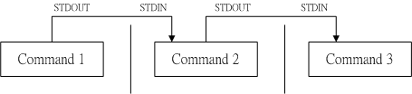

| |
最近更新日期：2007/07/15
本文已不再维护，更新文章请参考此处
|
文本模式 (command line) 这种指令下达的方式，在 Linux 里面，其实就相当于是 bash 的工具与接口！
因为 Linux 就是以 bash 为预设的 shell 的！那么前几章我们都已经很快乐的进行了很多的指令下达啰～
所以说， bash shell 根本就不难吧～是啦！只要能够熟悉的话，那么确实他也不是这么不可亲近的一项工具啊～
这个章节中，鸟哥会由变量谈起，先讲到环境变量的功能与修改的问题，
然后会继续提到历史指令的运用。接下来，就会谈一下『数据流重导向』这个重要概念，
最后就是管线命令的利用啦！好好清一清脑门，准备用功去啰～ ^_^
这个章节几乎是所有 command line 与未来主机维护与管理的重要基础，一定要好好仔细的阅读喔！
|
1. Bash shell
1.1 什么是 shell ？
1.2 系统的 shell 与 /etc/shells 功能
1.3 Bash shell 的功能
1.4 Bash shell 的内建命令： type
1.5 指令的下达
2. Shell 的变量功能
2.1 变量的取用与设定：echo,
变量设定规则, unset
2.2 变数的用途？
2.3 环境变量的功能：
env, 一些重要的环境变量,
set, export
2.4 语系档案的变量 (locale)
2.5 变量的有效范围：
2.6 变量键盘读取、数组与宣告： read,
declare, array
2.7 与文件系统及程序的限制关系： ulimit
2.8 其他额外变量功能
3. 命令别名与历史命令：
3.1 命令别名设定： alias, unalias
3.2 历史命令： history, HISTSIZE
4. Bash shell 使用环境：
4.1 绝对路径与相对路径
4.2 登录讯息显示数据： /etc/issue, /etc/motd
4.3 环境配置文件： bashrc, ~/.bashrc, ~/.profile, profile...,/etc/inputrc, source
4.4 终端机的环境设定： stty, set
4.5 通配符与特殊符号：
5. 数据流重导向 (redirecte)
5.1 何谓数据流重导向？
5.2 命令执行的判断依据： ; , &&, ||
6. 管线命令 (pipe)：
6.1 撷取命令： cut, grep
6.2 排序命令： sort, wc,
uniq
6.3 双向重导向： tee
6.4 字符转换命令： tr, col,
join, paste, expand
6.5 分割命令： split
6.6 参数代换： xargs
6.7 关于减号 - 的用途
7. 本章习题练习
8. 针对本文的建议：http://phorum.vbird.org/viewtopic.php?t=23884
 Bash shell Bash shell
我们在前面的 什么是 Linux 那个章节当中，提到了，
管理整个硬件的其实是核心 (kernel)，那我们一般使用者 (user) 则是以 shell 来跟核心沟通～
让核心达到我们所想要达到的工作目的。那么系统有多少 shell 可用呢？
为什么我们要使用 bash 啊？！底下分别来谈一谈喔！
什么是 Shell？
这应该是个蛮有趣的话题：『 什么是 Shell
？』相信只要摸过计算机，对于操作系统 ( 不论是 Linux 、 Unix 或者是 Windows
) 有点概念的朋友们大多听过这个名词，因为只要有『操作系统』那么就离不开
Shell 这个东西。不过，在讨论 Shell 之前，我们先来了解一下计算机的运作状况吧！
举个例子来说： 当你要计算机传输出来『音乐』的时候，你的计算机需要什么东西呢？
- 当然就是需要你的硬件有『声卡芯片』这个硬件配备，否则怎么会有声音；
- 操作系统的核心可以支持这个芯片组，当然还需要提供芯片的驱动程序啰；
- 需要使用者（就是你）输入发生声音的指令啰！
这就是基本的一个输出声音的需要的步骤！那么也就是说，你必须要『输入』一个指令之后，
『硬件』才会透过你下达的指令来工作！嘿嘿！那么硬件如何知道你下达的指令呢？那就是
kernel （核心）的控制工作了！了解了吗？没错！也就是说， 我们必须要透过『
Shell 』将我们输入的指令与 Kernel 沟通，好让 Kernel 可以控制硬件来正确无误的工作！
基本上，我们可以透过底下这两张图来说明一下：

图一、硬件、核心与用户的相关性图示

图二、硬件、核心与用户的相关性图示
基本上，替我们工作的是『硬件』，而控制硬件的是『核心』，再来，我们使用者乃是利用『Shell』控制一些
kernel 提供的 『工具 (Utility)』来操控硬件替我们正确的工作。再进一步来说，由于
kernel 听不懂人类的语言，而人类也没有办法直接记得 kernel 的语言，所以两者的沟通就得藉由
shell 来支援了！( 其实早期的 DOS 的文字接口也是使用 shell 来沟通呀！那个
shell 的名称就叫做 command.com ，还记得吗？ ^_^)
以字面上的意思来说， kernel 是『核心』的意思，而 Shell 是『壳』的意思，呵呵！也就是说，
shell 是最外头的咚咚！而 kernel 乃是最内层的的咚咚啦！核心是操作系统的最底层的东西！
这个核心里头包括了各种的支持硬件的工具！当然啰，如果你的硬件太新，而你的
kernel 并没有支持的话，那么很抱歉，你的 Shell 能力再怎么强，也没有办法使硬件工作的！
这样可以了解了吗？呵呵！没错！使计算机主机工作的正是核心的任务，但是操作核心来替使用者工作的，却是
shell 喔！因此，有时候你的 shell 搞了老半天，硬件却不能工作的时候，请注意，
您的『核心』是否正确呢？阿！扯远了！这是 kernel 章节才要说的东西。
我干嘛要学习文本模式的 Shell 呢？
我们常常提到的 shell 其实是比较狭隘的定义，一般来说，在 Linux 里头，所谓的 shell 就是指
BASH 这个文本模式的 shell 啰。但是，广义的 shell 也可以是 KDE 之类的图形接口控制软件呢！
因为他也可以帮我们与 kernel 进行沟通啊！不过，在鸟哥的 Linux 私房菜里面，
如果没有特别说明的话，那么我们的 shell 指的是比较狭义的，也就是文本模式的 shell 喔！
另外，鸟哥常常听到这个问题：『我干嘛要学习 shell 呢？
不是已经有很多的工具可以提供我设定我的主机了？我为何要花这么多时间去学指令呢？不是以
X Window 按一按几个按钮就可以搞定了吗？为什么要这么麻烦？』唉～还是得一再地强调，
X Window 还有 Web 接口的设定工具例如 webmin 是真的好用的家伙，
他真的可以帮助我们很简易的设定好我们的主机，甚至是一些很进阶的设定都可以帮我们搞定。
但是鸟哥在序章里面也已经提到过相当多次了， X Window 的接口虽然亲善，功能虽然强大，而
web 接口的工具也可以提供我们很友善的服务，但是毕竟他是将所有利用到的套件都整合在一起的一个套件而已，
并非是一个完整的套件，所以某些时候当你升级或者是使用其他套件管理模块(
例如 tarball 而非 rpm 档案等等 )时，就会造成设定的困扰了。
此外，远程联机时，文字接口的传输速度一定比较快，
而且，较不容易出现断线或者是信息外流的问题，因此，
shell 真的是得学习的一项工具。而且，他可以让您更深入 Linux ，更了解他，
而不是只会按一按鼠标而已！所谓『天助自助者！』多摸一点文本模式的东西，会让你与
Linux 更亲近呢！
有些朋友也很可爱，常会说：『我学这么多干什么？
又不常用，也用不到！』嘿嘿！有没有听过『书到用时方恨少？』
当你的主机一切安然无恙的时候，您当然会觉得好像学这么多的东西一点帮助也没有呀！
万一，某一天真的不幸给他中标了，您该如何是好？是直接重新安装？
还是先追踪入侵来源后进行漏洞的修补？或者是干脆就关站好了？这当然涉及很多的考虑，
但就以鸟哥的观点来看，多学一点总是好的，尤其我们可以有备而无患嘛！甚至学的不精也没有关系，了解概念也就
OK 啦！毕竟没有人要您一定要背这么多的内容啦！了解概念就很了不起了！
此外，如果您真的有心想要将您的主机管理的好，那么良好的
shell 程序编写是一定需要的啦！就鸟哥自己来说，我管理的主机虽然还不算多，
只有区区不到十部，但是如果每部主机都要花上几十分钟来查阅他的
log file 以及相关的信息，那么我可能会疯掉！基本上，也太没有效率了！这个时候，如果能够藉由
shell 提供的命令重导向( 或称数据流重导向 )，以及管线命令，呵呵！那么我分析
log file 只要花费不到十分钟就可以看完所有的主机之重要信息了！相当的好用呢！
由于学习 shell 的好处真的是多多啦！所以，如果您是个系统管理员，或者有心想要管理系统的话，那么
shell 这个东西与 shell scripts 这个东西，真的真的有必要看一看！
系统的 shell 与 /etc/shells
功能
知道什么是 Shell 之后，那么我们来了解一下 Linux 使用的是哪一个
shell 呢？什么！哪一个？难道说 shell 不就是『一个 shell 吗？』哈哈！那可不！由于早年的
Unix 年代，发展者众，所以由于 shell 依据发展者的不同就有许多的版本，例如常听到的
Bourne SHell (sh) 、在 Sun 里头预设的 C SHell、 商业上常用的 K SHell、,
还有 TCSH 等等，每一种 Shell 都各有其特点。至于 Linux 使用的这一种版本就称为『
Bourne Again SHell (简称 bash) 』，这个 Shell 是
Bourne Shell 的增强版本，也是基准于 GNU 的架构下发展出来的呦！
在介绍 shell 的优点之前，先来说一说 shell 的简单历史吧：第一个流行的
shell 是由 Steven Bourne 发展出来的，为了纪念他所以就称为 Bourne shell
，或直接简称为 sh ！而后来另一个广为流传的 shell 是由柏克莱大学的 Bill
Joy 设计依附于 BSD 版的 Unix 系统中的 shell ，这个 shell 的语法有点类似
C 语言，所以才得名为 C shell ，简称为 csh ！由于在学术界 Sun
主机势力相当的庞大，而 Sun 主要是 BSD 的分支之一，所以 C shell
也是另一个很重要而且流传很广的 shell 之一 ( 因为太多的程序设计师使用的就是 C
语言啦！ )！( 还记得我们在 Linux
是什么那一章提到的吧？ Sun 公司的创始人就是 Bill Joy，而 BSD 最早就是 Bill Joy
发展出来的啊！)。
那么目前我们的 Linux (以 FC4 为例) 有多少我们可以使用的 shells 呢？
你可以检查一下 /etc/shells 这个档案，至少就有底下这几个可以用的 shells：
- /bin/sh (已经被 /bin/bash 所取代)
- /bin/bash (就是 Linux 预设的 shell)
- /bin/ksh (Kornshell 由 AT&T Bell lab. 发展出来的，兼容于 bash)
- /bin/tcsh (整合 C Shell ，提供更多的功能)
- /bin/csh (已经被 /bin/tcsh 所取代)
- /bin/zsh (基于 ksh 发展出来的，功能更强大的 shell)
由上面的说明中，我们大概可以发现，其实各主要 shell 的功能都差不多，
有的只是语法上面的不同而已。目前一般的使用者使用习惯上，似乎是以 bash 及 csh 为主要的两个
shell 。OK！这么多的 shell 我要使用哪一个啊？呵呵！使用 Linux 支持最广泛的 bash 就好了！
不要想太多！另外，咦！ 为什么我们系统上的 shell 要写入
/etc/shells 这个档案啊？ 这是因为系统某些服务在运行过程中，
会去检查使用者能够使用的 shells ，而这些 shell 的查询就是藉由 /etc/shells 这个档案啰！
举例来说，某些 FTP 网站会去检查使用者的可用 shell ，而如果你不想要让这些使用者使用 FTP
以外的主机资源时，可能会给予该使用者一些怪怪的 shell，让使用者无法以其他服务登入主机。
这个时候，你就得将那些怪怪的 shell 写到 /etc/shells 当中了。举例来说，我们的 FC4
的 /etc/shells 里头就有个 /sbin/nologin 档案的存在，这个就是我们说的怪怪的 shell 啰～
那么，再想一想，我这个使用者什么时候可以取得 shell 来工作呢？还有，
我这个使用者预设会取得哪一个 shell 啊？！还记得我们在
首次进入 Linux -- 以文字方式登入
那个章节当中提到的登入动作吧？当我登入的时候，系统就会给我一个 shell 让我来工作了。
而这个登入取得的 shell 就记录在 /etc/passwd 这个档案内！这个档案的内容是啥？
[root@linux ~]# cat /etc/passwd
root:x:0:0:root:/root:/bin/bash
bin:x:1:1:bin:/bin:/sbin/nologin
daemon:x:2:2:daemon:/sbin:/sbin/nologin
.....(中间省略).....
|
如上所示，在每一行的最后一个数据，就是您登入后，可以取得的预设的 shell 啦！
那你也会看到， root 是 /bin/bash ，不过，系统账号 bin 与 daemon 等等，就使用那个怪怪的
/sbin/nologin 啰～关于使用者这部分的内容，我们留在
账号管理 时提供更多的说明。
Bash shell 的功能
既然 /bin/bash 是 Linux 预设的 shell ，那么总是得了解一下这个玩意儿吧！
BASH 是怎么一回事呢？这个 shell 是 GNU 计划中重要的工具软件之一，目前也是
GNU 操作系统中标准的 shell ，他主要兼容于 sh ，并且依据一些使用者需求，而加强的
shell 版本，可以说目前几乎所有的 Linux distribution 都是使用 bash 作为管理核心的主要
shell ！因此，不论您使用的是那个 distribution ，你都难逃需要学习 bash 的宿命啦！那么这个
shell 有什么好处，干嘛 Linux 要使用他作为预设的 shell 呢？ BASH 主要的优点有底下几个：
命令编修能力（类似 DOS 的 doskey 功能）：
使用 bash 里头，个人认为相当棒的一个功能就是『他能记忆使用过的指令！』
这功能真的相当的棒！因为我只要在指令列按『上下键』就可以找到前一个输入的指令！而在很多
distribution 里头，默认的指令记忆功能可以到达 1000 个！也就是说，
你曾经下达过的指令都被记录下来了，记录的档案在你的家目录内的
.bash_history
！不过，需要留意的是，
~/.bash_history 记录的是前一次登入以前所执行过的指令，
而至于这一次登入所执行的指令都被暂存在暂内存中，当您成功的注销系统后，该指令记忆才会记录到
.bash_history 当中！
这有什么功能呢？最大的好处就是可以『查询曾经做过的举动！』，
如此可以知道你的执行步骤，那么就可以追踪您曾下达的指令，以作为除错的工具！
但如此一来也有个烦恼，就是如果被黑客入侵了，那么他只要翻你曾经执行过的指令，
刚好你的指令又跟系统有关（例如直接输入 MySQL 的密码在指令列上面）那么很容易就被破解你的
Linux 主机！所以，最好是将记录的指令数目减小一点较好！
命令与档案补全功能：
还记得我们在 首次进入 Linux 的热门按键 一节当中提到的
[tab] 这个按键吗？！这个按键的功能就是在 bash 里头才有的啦！常常在 bash 环境中使用 [tab]
是个很棒的习惯喔！因为至少可以让你 1)少打很多字； 2)确定输入的数据是正确的！
使用 [tab] 按键的时机依据 [tab] 接在指令后或参数后而有所不同。我们再复习一次：
- [Tab] 接在一串指令的第一个字的后面，则为命令补全；
- [Tab] 接在一串指令的第二个字以后时，则为『档案补齐』！
所以说，如果我想要知道我的环境中，所有可以执行的指令有几个？
就直接在 bash 的提示字符后面输入两个 [tab][tab] 就能够输出所有的可执行指令了。
那如果想要知道系统当中所有以 c 为开头的指令呢？就按下 c[tab][tab] 就好啦！ ^_^
是的！真的是很方便的功能，所以， 有事没事，在
bash shell 底下，多按几次 [tab] 是一个不错的习惯啦！
假如我需要知道这个目录底下的所有档案（包含隐藏档）及所有的文件属性，那么我就必须要下达
ls -al 这样的指令列，唉！真麻烦，有没有更快的取代方式？呵呵！就使用命令别名呀！例如我最喜欢直接以
lm 这个自定义的命令来取代上面的命令，也就是说， lm 会等于 ls -al 这样的一个功能，嘿！那么要如何作呢？就使用
alias 即可！你可以在指令列输入 alias 就可以知道目前的命令别名有哪些了！也可以直接下达命令来设定别名呦：
这部分我们在之后的 资源管理章节中会再提及！
使用前、背景的控制可以让工作进行的更为顺利！至于工作控制(jobs)的用途则更广，
可以让我们随时将工作丢到背景中执行！而不怕不小心使用了
[Ctrl] + c 来停掉该程序！真是好样的！此外，也可以在单一登录的环境中，达到多任务的目的呢！
在 DOS 年代还记得将一堆指令写在一起的所谓的『批处理文件』吧？在 Linux 底下的
shell scripts 则发挥的更为强大的功能，可以将您日常生活当中常需要下达的连续指令写成一个档案，
该档案并且可以透过对谈交互式的方式来进行主机的侦测工作！也可以藉由
shell 提供的环境变量及相关指令来进行设计，哇！整个设计下来几乎就是一个小型的程序语言了！该
scripts 的功能真的是超乎我的想象之外！以前在 DOS 底下需要程序语言才能写的东西，在
Linux 底下使用简单的 shell scripts 就可以帮你达成了！真的厉害！！这部分我们在后续章节再来谈！
通配符！
除了完整的字符串之外， bash 还支持许多的通配符来帮助用户查询与指令下达。
举例来说，想要知道 /usr/X11R6/bin 底下有多少以 xt 为开头的档案吗？使用：
ls -l /usr/X11R6/bin/xt* 就能够知道啰～此外，还有其他可供利用的通配符，
这些都能够加快使用者的操作呢！
Bash shell 的内建命令： type
我们在首次进入 Linux 章节当中，提到关于 Linux 的联机帮助文件
部分，也就是 man page 的内容，那么 bash 有没有什么说明文件啊？开玩笑～
这么棒的东西怎么可能没有说明文件！请您在 shell 的环境下，直接输入 man bash 瞧一瞧，
嘿嘿！不是盖的吧！让您看个几天几夜也无法看完的 bash 说明文件，可是很详尽的数据啊！ ^_^
不过，在这个 man bash 所出现的 man page 当中，不知道您是否有察觉到，咦！
怎么这个说明文件里面有其他的档案说明啊？举例来说，那个 cd 指令的说明就在这个 man page 内？
然后我直接输入 man cd 时，怎么出现的画面中，最上方竟然出现一堆指令的介绍？？这是怎么回事？
为了方便 shell 的操作，其实 bash 已经『内建』了很多指令了，例如上面提到的 cd ，
还有例如 umask 等等的指令，都是内建在 bash 当中的呢！
那我怎么知道这个指令是来自于外部指令(指的是其他非 bash 套件所提供的指令) 或是内建在 bash 当中的呢？
嘿嘿！利用 type 这个指令来观察即可！举例来说：
[root@linux ~]# type [-tpa] name
参数：
：不加任何参数时，则 type 会显示出那个 name 是外部指令还是 bash 内建的指令！
-t ：当加入 -t 参数时，type 会将 name 以底下这些字眼显示出他的意义：
file ：表示为外部指令；
alias ：表示该指令为命令别名所设定的名称；
builtin ：表示该指令为 bash 内建的指令功能；
-p ：如果后面接的 name 为指令时，会显示完整文件名(外部指令)或显示为内建指令；
-a ：会将由 PATH 变量定义的路径中，将所有含有 name 的指令都列出来，包含 alias
范例：
范例一：查询一下 ls 这个指令是否为 bash 内建？
[root@linux ~]# type ls
ls is aliased to `ls --color=tty'
# 没有加上任何参数，仅列出 ls 这个指令的最主要使用情况
[root@linux ~]# type -t ls
alias
# -t 参数则仅列出 ls 这个指令的最主要使用情况说明
[root@linux ~]# type -a ls
ls is aliased to `ls --color=tty'
ls is /bin/ls
# 利用所有方法找出来的 ls 相关信息都会被列出来！
范例二：那么 cd 呢？
[root@linux ~]# type cd
cd is a shell builtin
|
透过 type 这个指令的用途，我们可以知道每个指令是否为 bash 的内建指令。
此外，由于利用 type 搜寻后面的名称时，如果后面接的名称并不能以执行档的状态被找到，
那么该名称是不会被显示出来的。举例来说，您的 FC4 应该不会有 vbird 这个指令吧？！
输入 type -p vbird 看一下，果然没有输出任何数据！而如果您输入的是 type -p touch 呢？
则会出现 /bin/touch ！呵呵！所以， 这个 type 也可以用来作为类似 which
指令的用途啦！找指令用的！
指令的下达
我们在 首次进入 Linux 一节当中，已经提到过在 shell
环境下的指令下达方式，不过，因为这个部分实在很重要，所以，我们还是再次的提醒一次！
[root@linux ~]# command [-options] parameter1 parameter2 ...
指令 选项 参数(1) 参数(2)
说明：
0. 一行指令中第一个输入的绝对是『指令(command)』或『可执行文件案』
1. command 为指令的名称，例如变换路径的指令为 cd 等等；
2. 中刮号[]并不存在于实际的指令中，而加入参数设定时，通常为 - 号，例如 -h；
有时候完整参数名称会输入 -- 符号，例如 --help；
3. parameter1 parameter2.. 为依附在 option 后面的参数，
或者是 command 的参数；
4. command, -options, parameter1.. 这几个咚咚中间以空格来区分，
不论空几格 shell 都视为一格；
5. 按下 [Enter] 按键后，该指令就立即执行。[Enter] 按键为 <CR> 字符，
他代表着一行指令的开始启动。
6. 指令太长的时候，可以使用 \ 符号来跳脱 [Enter] 符号，
使指令连续到下一行。注意！ \ 后就立刻接特殊字符。
7. 在 Linux 系统中，英文大小写字母是不一样的。举例来说， cd 与 CD 并不同。
范例：
范例一：列出 /root 底下的各文件名
[root@linux ~]# ls -al /root
[root@linux ~]# ls -al /root
# 不论指令与参数中间空几格，都是可以接受的！
范例二：如果指令太长的话，如何使用两行来输出？
[root@linux ~]# cp /var/spool/mail/root /etc/crontab \
> /etc/fstab /root
# 上面这个指令，就是将三个档案复制到 /root 这个目录下而已。不过，因为指令太长，
# 于是鸟哥就利用 \[Enter] 来将 [Enter] 这个按键『跳脱！』开来，让
# [Enter] 按键不再具有上述说明的第 5 点功能！好让指令继续在下一行输入。
# 需要特别留意， [Enter] 按键是紧接着反斜杠 (\) 的，两者中间没有其他字符。
# 因为 \ 仅跳脱『紧接着的下一个字符』而已！所以，万一我写成：
# \ [Enter] ，亦即 [Enter] 与反斜杠中间有一个空格时，则 \ 跳脱的是『空格键』
# 而不是 [Enter] 按键！这个地方请在仔细的看一遍！很重要！
# 如果顺利跳脱 [Enter] 后，下一行最前面就会主动出现 > 的符号，
# 您可以继续输入指令啰！也就是说，那个 > 是系统自动出现的，你不需要输入。
|
总之，当我们顺利的在终端机 (tty) 上面登入后， Linux 就会依据 /etc/passwd
档案的设定给我们一个 shell ，预设就是 bash ，然后我们就可以依据上面的指令下达方式来操作 shell，
之后，我们就可以透过 man 这个在线查询来查询指令的使用方式与参数说明，
很不错吧！那么我们就赶紧更进一步来操作 bash 这个好玩的东西啰！
Shell 的变量功能
在继续研究 BASH 之前，我们得要先就 变数 这个东西来讨论一番。
为什么要讨论变数呢？又，变数是啥玩意儿啊？！先来谈一谈国中数学好了，您是否依稀记得，
我们国中时候学过所谓的『 y = ax + b 』这东西？其中， y 是变量， x 则是这个变量的内容啊！
讲的更简单一点，我们可以『 用一个简单的 "字眼"
来取代另一个比较复杂或者是容易变动的数据』。这有什么好处啊？最大的好处就是『方便！』。
如果以 Linux 主机的运作来说明好了，因为在主机里面有太多的数据需要进行存取了，
而这些数据都是一些服务所必须的，例如某个名为 dmtsai 的账号，他的 mail 的存取路径默认是在
/var/spool/mail/dmtsai 、家目录默认在 /home/dmtsai 等等。那如果换了另外一个账号呢？
假设另一个账号名称为 vbird ，你猜他的邮件与家目录在哪？应该是在 /var/spool/mail/vbird 与 /home/vbird 对吧！
那么我们主机的邮件服务是否要记录好几个不同的路径啊？会不会太麻烦？这当然很麻烦啰～
所以为了简化整个运作流程，我们就可以透过某个变量功能，让这个变量可以依据不同的使用者而变更内容，
如此一来，系统的邮件服务只要依据那个变量去取得所需要的数据即可，就不需要记录不同的路径啰。
举例来说，我们每个账号的邮件信箱预设是以 MAIL 这个变量来进行存取的，
当 dmtsai 这个使用者登入时，他便会取得 MAIL 这个变量，而这个变量的内容其实就是 /var/spool/mail/dmtsai，
那如果 vbird 登入呢？他取得的 MAIL 这个变量的内容其实就是 /var/spool/mail/vbird 。
而我们使用信件读取指令 mail 来读取自己的邮件信箱时，嘿嘿，这支程序可以直接读取 MAIL 这个变量的内容，
就能够自动的分辨出属于自己的信箱信件啰！这样一来，设计程序的设计师就真的很方便的啦！
当然我们可以改变这些个变量，但是如果该变量是直接深植于套件当中，
那么当你修改了某些参数之后，嘿嘿！你的套件就必须要『 由原始码直接更新再编译』
才行！这样似乎很麻烦，所以啰，变量真的是很方便的啦！
Tips:
举个简单的例子来说， sendmail 的 smtp 存放 mail 路径是经由 /etc/profile 里头的：
MAIL="/var/spool/mail/$USER"
来设定的，而当我修改了上面这一个咚咚，然后重新启动之后，嘿嘿嘿嘿！
我的邮件就可以存放到不同的路径去了！而且不会有问题！可以顺利的『在
Linux 主机上面』收发。然而问题发生在 pop3 这个服务上面，由于 pop3 的默认路径是在
source code 里头，而且就正是 /var/spool/mail 这个路径，也就是说，不论我怎么修正我的『变量』，
pop3 都不为所动！唉～真惨，所以就无法直接以 pop3 来收信了（例如 OutLook
就不能工作了）！会发生密码不接受的问题呢！
|  |
再来继续讲到其他的变量功能好了，我们前面已经提到过很多次，能不能执行某个指令，
与 PATH 这个变量也有很大的关系的。举例来说，我们在任何地方下达 ls 这个指令时，系统就是透过 PATH
这个变量里面的内容所记录的路径顺序来搜寻指令的呢！如果在搜寻完 PATH 变量内的路径还找不到 ls 这个指令时，
就会在屏幕上显示『 command not found 』的错误讯息了。
这些还都只是系统默认的变量的目的，如果是个人的设定方面的应用呢：例如你要写一个大型的
script （批处理文件）时，有些数据因为可能由于用户习惯的不同而有差异，比如说路径好了，由于该路径在
script 被使用在相当多的地方，如果下次换了一部主机，都要修改 script 里面的所有路径，那么我一定会疯掉！
这个时候如果使用变量，而将该变量的定义写在最前面，后面相关的路径名称都以变量来取代，
嘿嘿！那么你只要修改一行就等于修改整篇 script 了！方便的很！所以，良好的程序设计师都会善用变量的定义！
( 这个部分我们在后续的 shell script 再次提及的！)
如果说的学理一点，那么由于在 Linux System 下面，所有的执行续都是需要一个执行码，
而就如同上面提到的，你『 真正以
shell 来跟 Linux 沟通，是在正确的登入 Linux 之后！』这个时候你就有一个
bash 的执行程序，也才可以真正的经由 bash 来跟系统沟通啰！而在进入 shell
之前，也正如同上面提到的，由于系统需要一些变量来提供他数据的存取（或者是一些环境的设定参数值，
例如是否要显示彩色等等的），所以就有一些所谓的『 环境变量』
需要来读入系统中了！这些环境变量例如 PATH、HOME、MAIL、SHELL 等等，都是很重要的，
为了区别与自定义变量的不同，环境变量通常以大写字符来表示呢！
好了，那么我们就简单的来对『 什么是变量』作个简单的定义好了：
『 变量就是以一组文字或符号等，来取代一些设定或者是一串保留的数据！』，
例如：我设定了『myname』就是『VBird』，所以当你读取
myname 这个变量的时候，系统自然就会知道！哈！那就是 VBird 啦！最简单的例子可以取 PATH
来说明！如果你对于『 相对路径与绝对路径』还有点印象的话，
那么应该晓得『 要下达正确的指令，应该需要指定路径与文件名』才行！例如你的
ls 指令应该需要以『/bin/ls』来下达指令才对，那么为何你在任意的路径下都可以执行
ls 呢？而不需要指定路径呢？这是因为系统已经默认了一些『 搜寻路径(PATH)』了，
所以当你需要执行一些指令的时候，系统就会依照该
PATH 的设定来进行指令的搜寻！而这个 PATH 就是所谓的变量了！
那么如何『 显示变量』呢？这就需要使用到 echo 这个指令啦！
变量的取用与设定：echo,
变量设定规则, unset
说的口沫横飞的，也不知道『变量』与『变量代表的内容』有啥关系？
当然啦，那我们就将『变量』的『内容』拿出来给您瞧瞧就好了。利用 echo 这个指令来取用变量，
但是，变量在被取用时，前面必须要加上 $ 才行，举例来说，要知道 PATH 的内容，该如何是好？
[root@linux ~]# echo $variable
[root@linux ~]# echo $PATH
/bin:/sbin:/usr/sbin:/usr/bin:/usr/local/sbin:/usr/local/bin:/usr/X11R6/bin
[root@linux ~]# echo ${PATH}
|
变量的取用就如同上面的范例，利用 ehco 就能够读出，只是需要在变量名称前面加上 $ ，
或者是以 ${variable} 的方式来取用都可以！当然啦，那个 echo 的功能可是很多的，
我们这里单纯是拿 echo 来读出变量的内容而已，更多的 echo 使用，请自行给他 man echo 吧！ ^_^
例题一：请在屏幕上面显示出您的环境变量 HOME 与 MAIL：
答：
|
OK！现在我们知道了变量与变量内的之间的相关性了，好了，那么我要如何『设定』或者是『修改』
某个变量的内容啊？！很简单啦！用『等号(=)』连接变量与他的内容就好啦！举例来说：
我要将 myname 这个变量名称的内容设定为 VBird ，那么：
[root@linux ~]# echo $myname
<==这里并没有任何数据～因为这个变量尚未被设定！是空的！
[root@linux ~]# myname=VBird
[root@linux ~]# echo $myname
VBird <==出现了！因为这个变量已经被设定了！
|
瞧！如此一来，这个变量名称 myname 的内容就带有 VBird 这个数据啰～
而由上面的例子当中，我们也可以知道：
当一个变量名称尚未被设定时，预设的内容是『空』的。
另外，变量在设定时，还是需要符合某些规定的，否则会设定失败喔！
这些规则如下所示啊！
- 变量与变量内容以等号『=』来连结；
- 等号两边不能直接接空格符；
- 变量名称只能是英文字母与数字，但是数字不能是开头字符；
- 若有空格符可以使用双引号『 " 』或单引号『 ' 』来将变量内容结合起来，但须要特别留意，
双引号内的特殊字符可以保有变量特性，但是单引号内的特殊字符则仅为一般字符；
- 必要时需要以跳脱字符『 \ 』来将特殊符号 ( 如 Enter,
$, \, 空格符, ' 等 ) 变成一般符号；
- 在一串指令中，还需要藉由其他的指令提供的信息，可以使用
quote 『 ` command` 』；(特别特别注意，那个 ` 是键盘上方的数字键 1
左边那个按键，而不是单引号！)
- 若该变量为扩增变量内容时，则需以双引号及 $变量名称
如：『 "$PATH":/home』继续累加内容；
- 若该变量需要在其他子程序执行，则需要以 export 来使变量变成环境变量，
如『export PATH』；
- 通常大写字符为系统默认变量，自行设定变量可以使用小写字符，方便判断
( 纯粹依照使用者兴趣与嗜好 ) ；
- 取消变量的方法为：『unset 变量名称』。
底下我们举几个例子来让您试看看，就知道怎么设定好您的变量啰！
范例一：设定一变量 name ，且内容为 VBird 。
[root@linux ~]# 12name=VBird
-bash: 12name=VBird: command not found <==屏幕会显示错误！因为不能以数字开头！
[root@linux ~]# name = VBird <==还是错误！因为有空白！
[root@linux ~]# name=VBird <==OK 的啦！
范例二：承上题，若变量内容为 VBird's name 呢？
[root@linux ~]# name=VBird's name
# 因为单引号可以将 Enter 这个特殊字符取消，所以，您可以继续在下一行输入内容～
# 不过，这与我们要达到的功能不同，所以，算是失败的啦！
[root@linux ~]# name="VBird's name" <==OK 的啦！
[root@linux ~]# name=VBird\'s\ name
# 利用反斜杠 (\) 跳脱特殊字符，例如单引号与空格键，这也是 OK 的啦！
范例三：我要在 PATH 这个变量当中『累加』:/home/dmtsai/bin 这个目录
[root@linux ~]# PATH=$PATH:/home/dmtsai/bin
[root@linux ~]# PATH="$PATH":/home/dmtsai/bin
# 上面这两种格式在 PATH 里头的设定都是 OK 的！但是底下的例子就不见得啰！
范例四：呈范例三，我要将 name 的内容多出 "yes" 呢？
[root@linux ~]# name=$nameyes
# 知道了吧？如果没有双引号，那么变量成了啥？name 的内容是 $nameyes 这个变量！
# 呵呵！我们可没有设定过 nameyes 这个变量吶！所以，应该是底下这样才对！
[root@linux ~]# name="$name"yes
[root@linux ~]# name=${name}yes
范例五：如何让我刚刚设定的 name=VBird 可以用在下个 shell 的程序？
[root@linux ~]# name=VBird
[root@linux ~]# bash <==进入到所谓的子程序
[root@linux ~]# echo $name <==嘿嘿！并没有刚刚设定的内容喔！
[root@linux ~]# exit <==离开刚刚的子程序
[root@linux ~]# export name
[root@linux ~]# bash <==进入到所谓的子程序
[root@linux ~]# echo $name <==出现了设定值了！
[root@linux ~]# exit <==离开刚刚的子程序
# 什么是『子程序』呢？就是说，在我目前这个 shell 的情况下，
# 去启用另一个新的 shell ，新的那个 shell 就是子程序啦！在一般的状态下，
# 父程序的自定义变量是无法在子程序内使用的。但是透过 export 将变量变成
# 环境变量后，就能够在子程序底下应用了！很不赖吧！至于程序的相关概念，
# 我们会在『程序与资源管理』章节当中提到的喔！
范例六：如何进入到您目前核心的模块目录？
[root@linux ~]# cd /lib/modules/`uname -r`/kernel
# 每个操作系统核心版本都不相同，以 FC4 为例，他的预设核心版本是
# 2.6.11-1.1369_FC4 所以，他的模块目录在 /lib/modules/2.6.11-1.1369_FC4/kernel 。
# 因为每个 distributions 的这个值都不相同，但是我们却可以利用 uname -r 这个指令
# 先取得版本信息，所以啰，就可以透过上面指令当中的内含指令 `uname -r`
# 先取得版本输出到 cd .. 那个指令当中，就能够顺利的进入目前核心的驱动程序所放置
# 的目录啰！很方便吧！
范例七：取消刚刚设定的 name 这个变量内容
[root@linux ~]# unset name
|
根据上面的案例你可以试试看！就可以了解变量的设定啰！这个是很重要的呦！请勤加练习！！
其中，较为重要的一些特殊符号的使用啰！例如单引号、双引号、跳脱字符、钱字号、quote
符号等等，底下的例题想一想吧！
例题二：在变量的设定当中，单引号与双引号的用途有何不同？
答：单引号与双引号的最大不同在于双引号仍然可以保有变量的内容，但单引号内仅能是一般字符
，而不会有特殊符号。我们以底下的例子做说明：假设您定义了一个变量， name=VBird ，现在想以
name 这个变量的内容定义出 myname 显示 VBird its me 这个内容，要如何订定呢？
[root@linux ~]# name=VBird
[root@linux ~]# echo $name
VBird
[root@linux ~]# myname="$name its me"
[root@linux ~]# echo $myname
VBird its me
[root@linux ~]# myname='$name its me'
[root@linux ~]# echo $myname
$name its me
发现了吗？没错！使用了单引号的时候，那么 $name 将失去原有的变量内容，
仅为一般字符的显示型态而已！这里必需要特别小心在意！
|
例题三：在指令下达的过程中， quote ( ` ) 这个符号代表的意义为何？
答：在一串指令中，在 ` 之内的指令将会被先执行，而其执行出来的结果将做为外部的输入信息！例如
uname -r 会显示出目前的核心版本，而我们的核心版本在 /lib/modules 里面，因此，你可以先执行
uname -r 找出核心版本，然后再以『 cd 目录』到该目录下，当然也可以执行如同上面范例六的执行内容啰。
另外再举个例子，我们也知道， locate 指令可以列出所有的相关档案档名，但是，
如果我想要知道各个档案的权限呢？举例来说，我想要知道每个 crontab 相关档名的权限：
[root@linux ~]# ls -l `locate crontab`
如此一来，先以 locate 将文件名数据都列出来，再以 ls 指令来处理的意思啦！瞭了吗？ ^_^
|
变数的用途
我们知道 PATH 这个变量是我们在执行指令的时候，所需要具备的指令搜寻目录数据，
没有他，我们就得要使用绝对路径来下达指令才行。当然，还有很多变量都有他特别的意义存在。
除此之外，『 我为何需要设定变量』呢？
要跟大家介绍这个『变量』，当然是因为他有相当程度的意义存在的啊！
底下就跟大家介绍一下，鸟哥设定变量的时机喔！
我的案例一：最简单的例子就是
『简化路径名称』啰！以鸟哥为例，我的工作在
Unix 系统之下进行一些数值模式的仿真工作，偏偏由于数据量太大，
为了怕日后忘记这个目录的内容与主要的意义，所以我的档名都取的很长，
偏偏在执行模式的过程中，常常会切换目录！我哩ㄌㄟ，光是打那几行路径名称就快要疯掉了！
所以我就设定那几行目录名称成为一个四个字符的变量，如此一来我只要输入『
cd $VARI 』这个指令，嘿嘿！马上就移动到该路径下了！很方便吧！当然变量的意义还不止于此，
不过这是最简单的实例说明啰！
我的案例二：另外一个常常需要变量的咚咚是在
scripts 里面，例如我写的一个侦测登录文件的小程序 logfile.sh 这个咚咚，
由于里头常常需要用到『储存路径』，偏偏可能每个人的存取路径都不太一样，
而如果要修改存取路径的话，嘿嘿！好几十行要同时修改呢！还可能会改错！
那么我只要定义一个变量，然后后续的所有数据都使用这个变量的内容！嘿嘿！
那么只要大家修改了这个变量的内容（只要一行），后续的动作就不需要修正了！这个动作常在程序或者是
script 当中看到的！
所以啰，有很多的时候为了方便或者是使用于 scripts 的意义，我们必须要设定变量！
当然啰，如果是跟系统终端机环境有关的设定值，很多也是利用变量来帮助达成的～
底下我们就来谈一谈所谓的『环境变量』吧！
环境变量的功能
环境变量可以帮我们达到很多功能～包括家目录的变换啊、提示字符的显示啊、执行文件搜寻的路径啊等等的，
还有很多很多啦！那么，既然环境变量有那么多的功能，问一下，目前我的 shell 环境中，
有多少变量啊？！呵呵！我们可以利用两个指令来查阅，分别是 env 与 export 呢！
一些环境变量的说明： env
范例一：列出目前的 shell 环境下的所有环境变量与其内容。
[root@linux ~]# env
HOSTNAME=linux.dmtsai.tw <== 这部主机的主机名
SHELL=/bin/bash <== 目前这个环境下，使用的 Shell 是哪一个程序？
TERM=xterm <== 这个终端机使用的环境是什么类型
HISTSIZE=1000 <== 这个就是『记录指令的笔数』在 FC4 默认可记录 1000 笔
USER=root <== 使用者的名称啊！
LS_COLORS=no=00:fi=00:di=00;34:ln=00;36:pi=40;33:so=00;35:bd=40;33;01:cd=40;33;01:
or=01;05;37;41:mi=01;05;37;41:ex=00;32:*.cmd=00;32:*.exe=00;32:*.com=00;32:*.btm=0
0;32:*.bat=00;32:*.sh=00;32:*.csh=00;32:*.tar=00;31:*.tgz=00;31:*.arj=00;31:*.taz=
00;31:*.lzh=00;31:*.zip=00;31:*.z=00;31:*.Z=00;31:*.gz=00;31:*.bz2=00;31:*.bz=00;3
1:*.tz=00;31:*.rpm=00;31:*.cpio=00;31:*.jpg=00;35:*.gif=00;35:*.bmp=00;35:*.xbm=00
;35:*.xpm=00;35:*.png=00;35:*.tif=00;35: <== 一些颜色显示
ENV=/root/.bashrc <== 使用的个人环境配置文件
MAIL=/var/spool/mail/root <== 这个用户所取用的 mailbox 位置
PATH=/sbin:/usr/sbin:/bin:/usr/bin:/usr/X11R6/bin:/usr/local/bin:/usr/local/sbin:
/root/bin <== 不再多讲啊！是执行文件指令搜寻路径
INPUTRC=/etc/inputrc <== 与键盘按键功能有关。可以设定特殊按键！
PWD=/root <== 目前用户所在的工作目录 (利用 pwd 取出！)
LANG=en_US.UTF-8 <== 这个与语系有关，底下会再介绍！
HOME=/root <== 这个用户的家目录啊！
_=/bin/env <== 上一次使用的指令的最后一个参数(或指令本身)
|
env 是 environment (环境) 的简写啊～
上面的例子当中，是列出来所有的环境变量。当然，如果使用 export 也会是一样的内容～
只不过， export 还有其他额外的功能就是了，我们等一下再提这个 export 指令。
那么上面这些变量有些什么功用呢？ 底下我们就一个一个来分析分析！
- HOME ： 代表用户的家目录。还记得我们可以使用 cd ~
去到用户的家目录吗？或者利用 cd 就可以直接回到用户家目录了。那就是取用这个功能啦～
有很多程序都可能会取用到这个变量的值喔！
- SHELL ： 告知我们，目前这个环境使用的 SHELL 是哪支程序？
如果是 bash 的话，预设是 /bin/bash 的啦！
- HISTSIZE ： 这个与『历史命令』有关，亦即是，
我们曾经下达过的指令可以被系统记录下来，而记录的『笔数』则是由这个值来设定的。
- ENV ： 这个使用者所使用的个人化环境配置文件的读取档案。
- MAIL ： 当我们使用 mail 这个指令在收信时，系统会去读取的邮件信箱档案
(mailbox)。
- PATH ： 就是执行文件搜寻的路径啦～目录与目录中间以冒号(:)分隔，
由于档案的搜寻是依序由 PATH 的变量内的目录来查询，所以，目录的顺序也是重要的喔。
- LANG ： 这个重要！就是语系档案啰～很多数据都会用到他，
举例来说，当我们在启动某些 perl 的程序语言档案时，他会主动的去分析语系数据文件，
如果发现有他无法解析的编码语系，可能会产生错误喔！一般来说，我们中文编码通常是 zh_TW.Big5 或者是
zh_TW.UTF-8，这两个编码偏偏不容易被解译出来，所以，有的时候，可能需要修订一下语系数据。
这部分我们会在下个小节做介绍的！
- RANDOM ： 这个玩意儿就是『随机随机数』的变量啦！目前大多数的
distributions 都会有随机数生成器，那就是 /dev/random 这个档案。
我们可以透过这个随机数档案相关的变量 ($RANDOM) 来随机取得随机数值喔。在 BASH 的环境下，这个 RANDOM
变量的内容，介于 0~32767 之间，所以，你只要 echo $RANDOM 时，系统就会主动的随机取出一个介于
0~32767 的数值。万一我想要使用 0~9 之间的数值呢？呵呵～利用 declare 宣告数值类型，
然后这样做就可以了：
[root@linux ~]# declare -i number=$RANDOM*10/32767 ; echo $number
8 <== 此时会随机取出 0~9 之间的数值喔！
|
大致上是有这些环境变量啦～里面有些比较重要的参数，在底下我们都会另外进行一些说明的～
其他所有的变量说明： set
而除了这些环境变量之外，还有没有什么重要的变量呢？当然有啊！
我们在 bash 的环境下，其实还有一些挺重要的变量，这些变量是『 在这个 shell
环境下有效』的， 如果是在『子程序』，这些变量值就不会相同了。
那么如何观察目前 shell 环境下的所有变量呢？很简单啊，就用 set 即可！set
这个指令除了会将环境变量列出来之外，其他我们的自定义变量，与所有的变量，都会被列出来喔！信息多好多。
底下仅列出几个重要的内容。
[root@linux ~]# set
BASH=/bin/bash <== bash 的主程序放置路径
BASH_VERSINFO=([0]="3" [1]="00" [2]="16" [3]="1" [4]="release"
[5]="i386-redhat-linux-gnu") <== bash 的版本啊！
BASH_VERSION='3.00.16(1)-release' <== bash 的版本啊！
COLORS=/etc/DIR_COLORS.xterm <== 使用的颜色纪录档案
COLUMNS=115 <== 在目前的终端机环境下，使用的字段有几个字符长度
HISTFILE=/root/.bash_history <== 历史命令记录的放置档案，隐藏档
HISTFILESIZE=1000 <== 存起来(与上个变量有关)的档案之指令的最大纪录笔数。
HISTSIZE=1000 <== 目前环境下，可记录的历史命令最大笔数。
HOSTTYPE=i386 <== 主机安装的软件主要类型。我们用的是 i386 兼容机器软件
IFS=$' \t\n' <== 预设的分隔符
LINES=35 <== 目前的终端机下的最大行数
MACHTYPE=i386-redhat-linux-gnu <== 安装的机器类型
MAILCHECK=60 <== 与邮件有关。每 60 秒去扫瞄一次信箱有无新信！
OLDPWD=/home <== 上个工作目录。我们可以用 cd - 来取用这个变量。
OSTYPE=linux-gnu <== 操作系统的类型！
PPID=20046 <== 父程序的 PID (会在后续章节才介绍)
PROMPT_COMMAND='echo -ne "\033]0;${USER}@${HOSTNAME%%.*}:${PWD/#$HOME/~}\007"'
<== 上面这个是命令提示字符！与底下也有关。
PS1='[\u@\h \W]\$ ' <== PS1 就厉害了。这个是命令提示字符，也就是我们常见的
[root@linux ~]# 或 [dmtsai ~]$ 的设定值啦！可以更动的！
RANDOM=13586 <== 随机数啊！上面已经提过啰～
SUPPORTED=zh_TW.UTF-8:zh_TW:zh:en_US.UTF-8 <== 本系统所支持的语系
name=VBird <== 刚刚设定的自定义变量也可以被列出来喔！
$ <== 目前这个 shell 所使用的 PID
? <== 刚刚执行完指令的回传值。
|
一般来说，不论是否为环境变量，只要跟我们目前这个 shell 的操作接口有关的变量，
通常都会被设定为大写字符，也就是说，『 基本上，在 Linux
预设的情况中，使用{大写的字母}来设定的变量一般为系统内定需要的变量』。
使用 set 除了会将系统的默认值秀出来之外，连带的所有的你自己设定的变量也会被秀出来！
同时需要注意的是，若当时有相当多人同时在在线的话，那么
你的变量只能给自己使用
( 除非改的是系统的默认参数文件，如 /etc/profile )，而不会干扰到别人的！就如同前面所说的，
由于你登入 Linux 之后会取得一个 PID ，而你的设定将只对这个 PID 与子程序有关！此外，
这次登入所进行的变量设定，如果没有更动到配置文件，
那么这次设定的变量在下次登入时将被取消掉 ( 因为程序 PID 不见啰！ ) ！所以啰，
如果你想要你的变量每次都能在你登入的时候自动就设定好了，那么就必须将你的设定写入登入时加载的配置文件！
( 更多的程序相关的说明，不要急～我们会在后面的
程序与资源管理 当中好好的提一提的！ )
OK！OK！那么上头那些变量当中，有哪些是比较重要的？大概有这几个吧！
- PS1：(提示字符的设定)
这是 PS1 (数字的 1 不是英文字母！)，这个东西就是我们的『命令提示字符』啊！
当我们每次按下 [Enter] 按键去执行某个指令后，最后要再次出现提示字符时，
就会主动去读取这个变数值了。上头 PS1 内显示的是一些特殊符号，每个版本 bash 的 PSI
变量内的特殊符号可能有些许的差异，
你应该主动的以 man bash 去查询一下相关的变数。底下我列出 FC4 的环境下，
默认的 bash 的 PS1 变量内的特殊符号代表意义：
- \d ：代表日期，格式为 Weekday Month Date，例如 "Mon Aug 1"
- \H ：完整的主机名。举例来说，鸟哥的练习机 linux.dmtsai.tw ，那么这个主机名就是 linux.dmtsai.tw
- \h ：仅取主机名的第一个名字。以上述来讲，就是 linux 而已， .dmtsai.tw 被省略。
- \t ：显示时间，为 24 小时格式，如： HH:MM:SS
- \T ：显示时间，12 小时的时间格式！
- \A ：显示时间，24 小时格式， HH:MM
- \u ：目前使用者的账号名称；
- \v ：BASH 的版本信息；
- \w ：完整的工作目录名称。家目录会以 ~ 取代；
- \W ：利用 basename 取得工作目录名称，所以仅会列出最后一个目录名。
- \# ：下达的第几个指令。
- \$ ：提示字符，如果是 root 时，提示字符为 # ，否则就是 $ 啰～
OK！所以，由预设的 PS1 内容为： '\[\u@\h \W\]\$ ' 就可以了解为何我们的提示字符会是：
[root@linux ~]# 了吧！好了，那么假设我想要有类似底下的提示字符：
[root@linux /home/dmtsai 16:50 #12]#
，那个 # 代表第 12 次下达的指令。
那么应该如何设定 PS1 呢？可以这样啊：
[root@linux home]# PS1='[\u@\h \w \A #\#]\$ '
[root@linux /home 17:02 #85]#
# 看到了吗？提示字符变了！变的很有趣吧！其中，那个 #85 比较有趣，
# 如果您按下 [Enter] 后，该数字就会增加喔！为啥？上面有说明ㄇㄟ！
|
- $：(关于本 shell 的 PID)
其实这个咚咚代表的是『目前这个 Shell 的线程代号』，亦即是所谓的 PID (Process ID)。
更多的程序观念，我们会在第四章的时候提及。想要知道我们的 shell 的 PID ，就可以：
echo $$ 即可！
- ?：(关于上个执行指令的回传码)
虾密？问号也是一个特殊的变数？没错！在 bash 里面这个变量可重要的很！
这个变数是：『上个执行的指令所回传的值』，
上面这句话的重点是『上一个指令』与『回传值』两个地方。当我们执行某些指令时，
这些指令都会回传一个执行后的代码。一般来说，如果成功的执行该指令，
则会回传一个 0 值，如果执行过程发生错误，就会回传『错误代码』才对！一般就是以非为 0 的数值来取代。
我们以底下的例子来看看：
[root@linux ~]# echo $SHELL
/bin/bash
[root@linux ~]# echo $?
0
# 因为上个指令执行过程中，并没有错误，为成功的执行完毕，所以回传 0 。
[root@linux ~]# 12name=VBird
-bash: 12name=VBird: command not found
[root@linux ~]# echo $?
127
# 发生错误啦！所以 echo $? 时，就会出现错误的代码！
# 我们可以利用这个代码来搜寻错误的原因喔！
[root@linux ~]# echo $?
0
# 咦！怎么又变成正确了？这是因为 "?" 只与『上一个执行指令』有关，
# 所以，我们上一个指令是执行『 echo $? 』，当然没有错误，所以是 0 没错！
|
- OSTYPE, HOSTTYPE, MACHTYPE：(主机硬件与核心的等级)
这几个东西与程序的安装有关。我们在『Linux 主机规划』
里面提到过关于主机的等级方面的问题，当我们在安装软件的时候，
需要透过编译程序来将原始码编译成为二进制的档案 (binary file)。但是，
我们可以针对硬件的配备来进行编译的优化，此时，这些参数就可以被用到了！
基本上，目前主要的 distribution 都是针对 i386 亦即最低等级的机器进行优化，
这样才能够安装在较高阶的机器上，如果以 686 的机型来优化，
那么，可就无法向下兼容的喔！(早期的 OpenLinux 是针对 686 机器来释出软件，
所以，当时的 OpenLinux 是无法安装在 P-166 的机器上的。 )
自定义变量转成环境变量： export
好了，上面我们环境变量也提过了，一些自定义变量也提过了，那么，这两者有啥不同？
他的不同处，我们在 变量设定规则 当中稍微提过，
主要是由于变量可否被子程序所引用。
当你取得一个 bash 之后，亦即得到了一个程序了，但是若你再次的执行一次
bash ，那么你将进入『子程序』，这个程序的概念我们在资源管理章节中再详谈，这里您先有个概念即可。
那么 由于您已经进入了该子程序，所以在父程序中的自定义变量设定将不再继续的存在。
会存在子程序中的，仅有『环境变量』。
换个角度来想，也就是说，如果我能将自定义变量变成环境变量的话，那不就可以让该变量值继续存在于子程序了？
呵呵！没错！此时，那个 export 指令就很有用啦！
如您想要让该变量内容继续的在子程序中使用，那么就请执行：
这个东西用在『 引用他人的档案或者其他程序』时，相当的重要的！
尤其像鸟哥常常两三个档案互相引用来引用去的，如果忘记设定
export 的话，那么不同的档案中的相同变量值，将需要一再地重复设定才行！所以，我只要在头一个档案使用
export 的话，那么后续的档案引用时，将会把该变量内容读进来！好用的很，如果仅下达
export 而没有接变量时，那么此时将会把所有的『环境变量』秀出来喔！例如：
[root@linux ~]# export
declare -x ENV="/root/.bashrc"
declare -x HISTSIZE="1000"
declare -x HOME="/root"
declare -x HOSTNAME="linux.dmtsai.tw"
declare -x INPUTRC="/etc/inputrc"
declare -x LANG="en_US.UTF-8"
declare -x MAIL="/var/spool/mail/root"
declare -x SHELL="/bin/bash"
# 很多都直接省略了！不然....重复性太高，浪费版面～ ^_^
|
语系档案的变量 (locale)
还记得我们在首次进入 Linux 那个章节里面提到的，关于语系编码的问题吗？
就是当我们使用 man command 的方式去查询某个数据的说明文件时，该说明档的内容可能会因为我们使用的语系，
而产生一些乱码。另外，利用 ls 查询档案的时间时，也可能会有乱码出现在时间的部分。
那个问题其实就是语系的问题啦。
目前大多数的 Linux distributions 已经都是支持万国码，此外，也都支持大部分的语言语系了。
这有赖于 i18n 支援的帮助呢！
那么我们的 Linux 到底支持了多少的语系呢？这可以由 locale 这个指令来查询到喔！
[root@linux ~]# locale -a
aa_DJ
aa_DJ.iso88591
en_US
en_US.iso88591
en_US.iso885915
en_US.utf8
zh_TW
zh_TW.big5
zh_TW.euctw
zh_TW.utf8
# 其实输出的内容有很多，鸟哥将一些信息舍弃了～
# 从上面的输出中，我们也不难看出，系统是有支持 big5, utf8 等中文语系数据的！
|
中文语系至少支持了两种以上的编码，一种是目前还是很常见的 big5 ，另一种则是越来越热门的 utf-8 编码。
那么我们如何修订这些编码呢？其实可以透过底下这些变量的说：
[root@linux ~]# LANG <==主语言的环境
[root@linux ~]# LC_CTYPE <==字符辨识的编码
[root@linux ~]# LC_NUMERIC <==数字系统的显示讯息
[root@linux ~]# LC_TIME <==时间系统的显示数据
[root@linux ~]# LC_COLLATE <==字符串的比较与排序等
[root@linux ~]# LC_MONETARY <==币值格式的显示等
[root@linux ~]# LC_MESSAGES <==讯息显示的内容，如菜单、错误讯息等
[root@linux ~]# LC_ALL <==语言环境的整体设定。
|
基本上，你可以逐一设定每个与语系有关的变量数据，但事实上，如果其他的语系变量都未设定，
且您有设定 LANG 或者是 LC_ALL 时，则其他的语系变量就会被这两个变量所取代！
这也是为什么我们在 FC4 当中，通常仅设定 LANG 这个变量而已！因为他是最主要的设定变量。
好了，那么你应该要觉得奇怪的是，为什么在 Linux 主机的终端机接口 (tty1 ~ tty6)
的环境下，如果 LANG=zh_TW.big5 这个设定值生效后，使用 man 或者其他讯息输出时，
都会有一堆乱码，尤其是使用 ls -l 这个参数时？
因为在 Linux 主机的终端机接口下，那个环境是无法显示像中文这么复杂的编码的文字，
所以，就会产生乱码了。也就是如此，所以，我们才会必须要在 tty1 ~ tty6 的环境下，
加装一些中文化接口的软件，才能够看到中文啊！不过，如果您是在 Windows
主机以远程联机服务器的软件联机到主机的话，那么，嘿嘿！其实文字接口确实是可以看到中文的。
所以，此时反而您得要在 LANG 设定中文编码才好呢！
无论如何，如果发生一些乱码的问题，那么设定系统里面保有的语系编码，
例如： en_US 或 en_US.utf8 等等的设定，应该就 OK 的啦！好了，那么系统默认支持多少种语系呢？
当我们使用 locale 时，系统是列出目前 Linux 主机内保有的语系档案，
这些语系档案都放置在： /usr/lib/locale/ 这个目录中。
但是，目前的这个 shell 环境所支持的语系，则是要看 SUPPORTED 这个变数才对喔！
那么，如果我想要修订系统的语系支持呢？可以修订 /etc/sysconfig/i18n 这个档案呢！
这个档案的内容有点像这样：
[root@linux ~]# vi /etc/sysconfig/i18n
LANG="en_US.UTF-8"
SYSFONT="latarcyrheb-sun16"
SUPPORTED="zh_TW.UTF-8:zh_TW:zh:en_US.UTF-8"
|
你可以在这个档案当中加入 LC_TIME 或者其他语系相关变量的设定内容，
也可以直接修改 LANG 那个变量即可啊！ ^_^ 但，事实上，我们还可以透过个人的环境配置文件来设定 LANG 呢！
如此一来，则不必修订系统的语系档案，比较安全啦！
Tips:
假设你用 vi 编辑一个纯文本档，这个纯文本档在编辑的时候，是在 Windows 上面编辑的，
那么这个档案的默认编码应该是以 zh_TW.big5 所编辑的才对。但是，如果你的 shell 环境中，
却是使用 LANG=en_US 时，则当你编辑该档案时，就可能会看到『乱码』，
或者输入的中文可能会变成『乱码』了。此时，只要你离开 vi ，然后执行 LANG=zh_TW.big5 ，
然后再重新以 vi 编辑该档案，呵呵！应该就能够看到中文啦！但是请注意，
这个方法当然不适用 tty1 ~ tty6 的环境，原因上面已经提过啰～
仅适合以类似 putty 软件由 Windows 计算机联机到 linux 主机上的做业！
| |
变量的有效范围
虾密？？变量也有使用的『范围』？没错啊～我们在上头的 export
指令说明中，就提到了这个概念了。如果在跑程序的时候，有父程序与子程序的不同程序关系时，
则『变数』可否被引用是 export 有关。被 export 后的变量，我们可以称他为『环境变量』！
环境变量可以被子程序所引用，但是其他的自定义变量内容就不会存在于子程序中。也就是说：
我们自行设定的变量，只在目前这个 shell 环境当中存在，
在子程序中将不会存在此一变量。除非使用 export 将自定义变量变成环境变量。
其实除了 shell 的父、子程序外，在脚本( scripts )的编写当中，由于有的软件会使用到
2 个以上的 scripts 做为一个完整的套件！也就是说，假如你有两支程序，一支为
scripts1.sh 以及 scripts2.sh ，而 scripts2.sh 会去引用 scripts1.sh 的变数，这个时候，嘿嘿！你在
scripts1.sh 当中设定的变量请『 千万记得以 export 设定』，
否则你的变量将无法在两个 scripts 之间互相被引用喔！当这个 scripts 执行完毕之后，刚刚在
scripts 当中设定的变量也就『失效了！』。
其实，要了解不同程序之间变量的变换，应该要先了解『程序』的概念比较好，
但是我们还没有讲到.....没关系～等你念到程序章节后，还可以再回来好好的看一看。
基本上，环境变量可以让子程序继续引用的原因，是因为：
- 当启动一个 shell ，操作系统分配一记忆区块给 shell 使用，此区域之变量可以让子程序存取；
- 利用 export 功能，可以让变量的内容写到上述的记忆区块当中(环境变量)；
- 当加载另一个 shell 时 (亦即启动子程序，而离开原本的父程序了)，子 shell 可以将父 shell
的环境变量所在的记忆区块导入自己的环境变量区块当中。
透过这样的关系，我们就可以让某些变量可以在相关的程序之间存在，以帮助自己更方便的操作环境喔！
变量键盘读取、数组与宣告：
read, array, declare
我们上面提到的变量设定功能，都是直接由指令列直接设定的，那么，可不可以让用户能够经由键盘输入？
什么意思呢？是否记得某些程序执行的过程当中，会等待使用者输入 "yes/no" 之类的讯息啊！？
在 bash 里面也有相对应的功能喔！此外，我们还可以宣告这个变量的属性，
例如：数组或者是数字等等的。底下就来看看吧！
read
要读取来自键盘输入的变量，就是用 read 这个指令了。这个指令最常被用在 shell script 的撰写当中，
以跟使用者进行对谈。关于 script 的写法，我们会在后面章节介绍，底下先来瞧一瞧 read 的相关语法吧！
[root@linux ~]# read [-pt] variable
参数：
-p ：后面可以接提示字符！
-t ：后面可以接等待的『秒数！』这个比较有趣～不会一直等待使用者啦！
范例：
范例一：让用户由键盘输入一内容，将该内容变成 atest 变量
[root@linux ~]# read atest
This is a test
[root@linux ~]# echo $atest
This is a test
范例二：提示使用者 30 秒内输入自己的大名，将该输入字符串做成 named 变量
[root@linux ~]# read -p "Please keyin your name: " -t 30 named
Please keyin your name: VBird Tsai
[root@linux ~]# echo $named
VBird Tsai
|
read 之后不加任何参数，直接加上变量名称，那么底下就会主动出现一个空白行，等待您输入。
如果加上 -t 后面接秒数之后，例如上面的范例当中，那么 30 秒之内没有任何动作时，
该指令就会自动略过了～如果是加上 -p ，嘿嘿！后面就会有比较多可以用的提示字符给我们参考！
在指令的下达里面，比较美观啦！ ^_^
declare / typeset
declare 或 typeset 是一样的功能，就是在宣告变量的属性。如果使用 declare 后面并没有接任何参数，
那么 bash 就会主动的将所有的变量名称与内容通通叫出来，就好像使用 set 一样啦！
那么 declare 还有什么语法呢？看看先：
[root@linux ~]# declare [-aixr] variable
参数：
-a ：将后面的 variable 定义成为数组 (array)
-i ：将后面接的 variable 定义成为整数数字 (integer)
-x ：用法与 export 一样，就是将后面的 variable 变成环境变量；
-r ：将一个 variable 的变量设定成为 readonly ，该变量不可被更改内容，也不能 unset
范例：
范例一：让变量 sum 进行 100+300+50 的加总结果
[root@linux ~]# sum=100+300+50
[root@linux ~]# echo $sum
100+300+50 <==咦！怎么没有帮我计算加总？因为这是文字型态的变量属性啊！
[root@linux ~]# declare -i sum=100+300+50
[root@linux ~]# echo $sum
450 <==瞭乎？？
范例二：将 sum 变成环境变量
[root@linux ~]# declare -x sum
范例三：让 sum 变成只读属性，不可更动！
[root@linux ~]# declare -r sum
[root@linux ~]# sum=tesgting
-bash: sum: readonly variable <==老天爷～不能改这个变数了！
|
declare 也是个很有用的功能～尤其是当我们需要使用到底下的数组功能时，
他也可以帮我们宣告数组的属性喔！不过，老话一句，数组也是在 shell script 比较常用的啦！
数组属性 array 说明
某些时候，我们必须使用数组来宣告一些变量，这有什么好处啊？在一般人的使用上，
果然是看不出来有什么好处的！不过，如果您曾经写过程序的话，那才会比较了解数组的意义～
数组对写数值程序的设计师来说，可是不能错过学习的重点之一哩！好！不啰唆～
那么要如何设定数组的变量与内容呢？在 bash 里头，数组的设定方式是：
意思是说，我有一个数组名为 var ，而这个数组的内容为 var[1]=小明， var[2]=大明，
var[3]=好明 .... 等等，那个 index 就是一些数字啦，重点是用中刮号 ([ ]) 来设定的。
目前我们 bash 提供的是一维数组。老实说，如果您不必写一些复杂的程序，
那么这个数组的地方，可以先略过，等到有需要再来学习即可！因为要制作出数组，
通常与循环或者其他判断式交互使用才有比较高的意义存在！
范例：设定上面提到的 var[1] ～ var[3] 的变数。
[root@linux ~]# var[1]="small min"
[root@linux ~]# var[2]="big min"
[root@linux ~]# var[3]="nice min"
[root@linux ~]# echo "${var[1]}, ${var[2]}, ${var[3]}"
|
比较有趣的地方在于『读取』，一般来说，建议直接以 ${数组} 的方式来读取，
比较正确无误的啦！
与文件系统及程序的限制关系：
ulimit
想象一个状况：我的 Linux 主机里面同时登入了十个人，这十个人不知怎么搞的，
同时开启了 100 个档案，每个档案的大小约 10MBytes ，请问一下，
我的 Linux 主机的内存要有多大才够？ 10*100*10 = 10000 MBytes ～～
老天爷，这样，系统不挂点才有鬼哩！为了要预防这个情况的发生，所以，
我们的 bash 是可以『限制用户的某些系统资源』的，包括可以开启的档案数量，
可以使用的 CPU 时间，可以使用的内存总量等等。如何设定？用 ulimit 吧！
[root@linux ~]# ulimit [-SHacdflmnpstuv] [配额]
参数：
-H ：hard limit ，严格的设定，必定不能超过设定的值；
-S ：soft limit ，警告的设定，可以超过这个设定值，但是会有警告讯息，
并且，还是无法超过 hard limit 的喔！也就是说，假设我的 soft limit
为 80 ， hard limit 为 100 ，那么我的某个资源可以用到 90 ，
可以超过 80 ，还是无法超过 100 ，而且在 80~90 之间，会有警告讯息的意思。
-a ：列出所有的限制额度；
-c ：可建立的最大核心档案容量 (core files)
-d ：程序数据可使用的最大容量
-f ：此 shell 可以建立的最大档案容量 (一般可能设定为 2GB)单位为 Kbytes
-l ：可用于锁定 (lock) 的内存量
-p ：可用以管线处理 (pipe) 的数量
-t ：可使用的最大 CPU 时间 (单位为秒)
-u ：单一用户可以使用的最大程序(process)数量。
范例：
范例一：列出所有的限制数据
[root@linux ~]# ulimit -a
范例二：限制用户仅能建立 1MBytes 以下的容量的档案
[root@linux ~]# ulimit -f 1024
|
还记得我们在 Linux 磁盘文件系统 里面提到过，单一 filesystem
能够支持的单一档案大小与 block 的大小有关。例如 block size 为 1024 byte 时，单一档案可达
16GB 的容量。但是，我们可以用 ulimit 来限制使用者可以建立的档案大小喔！
利用 ulimit -f 就可以来设定了！例如上面的范例二，要注意单位喔！单位是 Kbytes。
若改天你一直无法建立一个大容量的档案，记得瞧一瞧 ulimit 的信息喔！(
不过，要注意的是，一般身份使用者如果以 ulimit 设定了 -f 的档案大小，
那么他『只能减小档案大小，不能增加档案大小喔！』)
额外的变量设定功能
刚刚我们提到了两种变量取用的方法，分别是这样：
[root@linux ~]# echo $HOME
[root@linux ~]# echo ${HOME}
|
那么，在那个 ${variable} 的使用方法中，其实，我们还可以将变量进行一些修订的工作喔！
只要加上一些字符标志，后面再接着使用比对字符串，就能够修改变量的内容了！
我们取底下的例子来说明：在底下的例子中，假设我的变量名称为 vbird ，且内容为
/home/vbird/testing/testing.x.sh。
1. 完整呈现 vbird 这个变量的内容；
[root@linux ~]# vbird="/home/vbird/testing/testing.x.sh"
[root@linux ~]# echo ${vbird}
/home/vbird/testing/testing.x.sh
2. 在 vbird 变量中，从最前面开始比对，若开头为 / ，则删除两个 /
之间的所有数据，亦即 /*/
[root@linux ~]# echo ${vbird##/*/}
testing.x.sh <==删除了 /home/vbird/testing/
[root@linux ~]# echo ${vbird#/*/}
vbird/testing/testing.x.sh <==仅删除 /home/ 而已
# 这两个小例子有趣了～变量名称后面如果接了两个 ## ，表示在 ##
# 后面的字符串取『最长的』那一段；如果仅有一个 # ，表示取『最小的那一段』喔！
3. 承上题，如果是从后面开始，删除 /* 呢？
[root@linux ~]# echo ${vbird%%/*/}
/home/vbird/testing/testing.x.sh <==都没被删除
[root@linux ~]# echo ${vbird%%/*}
<==被删除光了！
[root@linux ~]# echo ${vbird%/*}
/home/vbird/testing <==只删除 /testing.x.sh 部分
# 这个例子当中需要特别注意，那个 % 比对的是『最后面那个字符』的意思，
# 所以啰，第一个方式当然不对～因为 vbird 这个变量的内容最后面是 h 而不是 / 啊！
# 至于 %%/* 则是删除『最长的那个 /* 』，当然就是全部喔！而 %/* 则是最短的那个！
4. 将 vbird 变数中的 testing 取代为 TEST
[root@linux ~]# echo ${vbird/testing/TEST}
/home/vbird/TEST/testing.x.sh
[root@linux ~]# echo ${vbird//testing/TEST}
/home/vbird/TEST/TEST.x.sh
# 如果变量后面接的是 / 时，那么表示后面是进行『取代』的工作～而且仅取代『第一个』
# 但如果是 // ，则表示全部的字符串都取代啊！
|
这里您稍微留意一下就好了～反正就是变量后面可以接 #, ##, %, %%, /, // ，
而他们存在的意义并不相同的啦～
另外，几个不同的变量内容还可以进行判断呢！
举例来说，目前我需要用到两个变量，分别是 var 与 str ，
那我想要针对 str 这个变量内容是否有设定成一个字符串，亦即 "expr" 来决定 var 的内容。
那我可以使用什么方法来进行判断呢？如果您会写 shell script 的话，
直接用 shell script 就好了，如果不会写，那么我们就透过简单的变量判断吧！
Tips:
底下的例子当中，那个 var 与 str 为变量，我们想要针对 str 是否有设定来决定 var 的值喔！
一般来说， str: 代表『str 没设定或为空的字符串时』；至于 str 则仅为『没有该变数』。
| |
| 变量设定方式 | str 没有设定 |
str 为空字符串 | str 已设定非为空字符串 |
| var=${str-expr} | var=expr | var= | var=$str |
| var=${str:-expr} | var=expr | var=expr | var=$str |
| var=${str+expr} | var= | var=expr | var=expr |
| var=${str:+expr} | var= | var= | var=expr |
| var=${str=expr} | str=expr
var=expr |
str 不变
var= | str 不变
var=$str |
| var=${str:=expr} | str=expr
var=expr |
str=expr
var=expr | str 不变
var=$str |
| var=${str?expr} | expr 输出至 stderr | var= | var=str |
| var=${str:?expr} | expr 输出至 stderr | expr 输出至 stderr | var=str |
根据上面这张表，我们来进行几个范例的练习吧！ ^_^
范例一：若 str 这个变量内容存在，则 var 设定为 str ，否则 var 设定为 "newvar"
[root@linux ~]# unset str; var=${str-newvar}
[root@linux ~]# echo var="$var", str="$str"
var=newvar, str= <==因为 str 不存在，所以 var 为 newvar
[root@linux ~]# str="oldvar"; var=${str-newvar}
[root@linux ~]# echo var="$var", str="$str"
var=oldvar, str=oldvar <==因为 str 存在，所以 var 等于 str 的内容
范例二：若 str 不存在，则 var 与 str 均设定为 newvar，否则 var 与 str 相同
[root@linux ~]# unset str; var=${str=newvar}
[root@linux ~]# echo var="$var", str="$str"
var=newvar, str=newvar <==因为 str 不存在，所以 var/str 均为 newvar
[root@linux ~]# str="oldvar"; var=${str=newvar}
[root@linux ~]# echo var="$var", str="$str"
var=oldvar, str=oldvar <==因为 str 存在，所以 var 等于 str 的内容
范例三：若 str 这个变量存在，则 var 等于 str ，否则输出 "novar"
[root@linux ~]# unset str; var=${str?novar}
-bash: str: novar <==因为 str 不存在，所以输出错误讯息
[root@linux ~]# str="oldvar"; var=${str?novar}
[root@linux ~]# echo var="$var", str="$str"
var=oldvar, str=oldvar <==因为 str 存在，所以 var 等于 str 的内容
# 上面这三个案例都没有提到当 str 有设定，且为空字符串的情况喔！
# 您可以自行测试一下哩！
|
虽然猛一看，觉得变量没有什么奇特的地方，但是，如果仔细瞧一瞧，嘿！一堆环境变量与系统资源方面的变量，
可是会影响到我们在 bash 里头是否能够顺利作业的呢！例如 PATH 啊、ulimit 之类的～
所以，您还是得要了解变量这个玩意才行喔！ ^_^
命令别名与历史命令：
我们知道在早期的 DOS 年代，清除屏幕上的信息可以使用 cls 来清除，但是在 Linux 里面，
我们则是使用 clear 来清除画面的。那么可否让 cls 等于 clear 呢？可以啊！用啥方法？
link file 还是什么的？别急！底下我们介绍不用 link file 的命令别名来达成。那么什么又是历史命令？
曾经做过的举动我们可以将他记录下来喔！那就是历史命令啰～底下分别来谈一谈这两个玩意儿。
命令别名设定： alias, unalias
命令别名是一个很有趣的东西，特别是你的惯用指令特别长的时候！还有，
增设默认的属性在一些惯用的指令上面，可以预防一些不小心误杀档案的情况发生的时候！
举个例子来说，如果你要查询隐藏档，并且需要长的列出与一页一页翻看，那么需要下达『
ls -al | more 』这个指令，我是觉得很烦啦！
要输入好几个单字！那可不可以使用
lm 来简化呢？！当然可以，你可以在命令行下面下达：
[root@linux ~]# alias lm='ls -l | more'
|
嘿嘿！我立刻多出了一个可以执行的指令喔！这个指令名称为 lm ，且其实他是执行
ls -al | more 啊！真是方便。不过，
要注意的是：『alias 的定义规则与 变量定义规则几乎相同』，
所以你只要在 alias 后面加上你的 { 『别名』='指令 参数' }，
以后你只要输入 lm 就相当于输入了 ls -al|more 这一串指令！很方便吧！
另外，命令别名的设定还可以取代既有的指令喔！举例来说，我们知道 root
可以移除( rm )任何数据！所以当你以 root 的身份在进行工作时，需要特别小心，
但是总有失手的时候，那么 rm 提供了一个参数来让我们确认是否要移除该档案，那就是 -i
这个参数！所以，你可以这样做：
[root@linux ~]# alias rm='rm -i'
|
嘿嘿！那么以后使用 rm 的时候，就不用太担心会有错误删除的情况了！这也是命令别名的优点啰！
那么如何知道目前有哪些的命令别名呢？就使用 alias 呀！
[root@linux ~]# alias
alias l.='ls -d .* --color=tty'
alias ll='ls -l --color=tty'
alias lm='ls -al | more'
alias ls='ls --color=tty'
alias vi='vim'
alias which='alias | /usr/bin/which --tty-only --read-alias --show-dot --show-tilde'
|
由上面的资料当中，您也会发现一件事情啊，我们在 vi 文书编辑器 里面提到
vi 与 vim 是不太一样的， vi 是比较老，而 vim 可以用来取代 vi 喔。我们的 FC4 明明就同时有 vi/vim ，
为何我执行 vi 会是进入 vim 呢？呵呵！那就是因为上面的表格当中的『 alias vi='vim' 』这个设定啦！
至于如果要取消命令别名的话，那么就使用 unalias 吧！例如要将刚刚的 lm 命令别名拿掉，就使用：
[root@linux ~]# unalias lm
|
那么命令别名与变量有什么不同呢？基本上，他们的意义就不太一样了！ alias
这种命令别名，你可以将他想成是建立一个新的指令名称，
至于变量则仅是将一个数值或者字符串存在某个代表意义当中！举个例子好了，我们知道以前的
DOS 年代，列出目录与档案就是 dir ，而清除屏幕就是 cls ，那么如果我想要在
linux 里面也使用相同的指令呢？那就以 alias 来进行指令的别名设定：
alias cls='clear'
alias dir='ls -l'
只要加入这两行，以后你输入 cls 及 dir 就可以执行了！很方便吧！
历史命令：history
前面我们提过 bash 有提供指令历史的服务！那么如何查询我们曾经下达过的指令呢？就使用
history 啰！当然，如果觉得 histsory 要输入的字符太多太麻烦，可以使用命令别名来设定呢！
不要跟我说还不会设定呦！ ^_^
如此则输入 h 等于输入 history 啰！好了，我们来谈一谈 history 的用法吧！
[root@linux ~]# history [n]
[root@linux ~]# history [-c]
[root@linux ~]# history [-raw] histfiles
参数：
n ：数字，意思是『要列出最近的 n 笔命令行表』的意思！
-c ：将目前的 shell 中的所有 history 内容全部消除
-a ：将目前新增的 history 指令新增入 histfiles 中，若没有加 histfiles ，
则预设写入 ~/.bash_history
-r ：将 histfiles 的内容读到目前这个 shell 的 history 记忆中；
-w ：将目前的 history 记忆内容写入 histfiles 中！
范例：
范例一：列出目前内存内的所有 history 记忆
[root@linux ~]# history
# 前面省略
1017 man bash
1018 ll
1019 history
1020 history
# 列出的信息当中，共分两栏，第一栏为该指令在这个 shell 当中的代码，
# 另一个则是指令本身的内容喔！至于会秀出几笔指令记录，则与 HISTSIZE 有关！
范例二：列出目前最近的 3 笔资料
[root@linux ~]# history 3
1019 history
1020 history
1021 history 3
范例三：立刻将目前的资料写入 histfile 当中
[root@linux ~]# history -w
# 在预设的情况下，会将历史纪录写入 ~/.bash_history 当中！
[root@linux ~]# echo $HISTSIZE
1000
|
在正常的情况下，当我们以 bash 登入 Linux 主机之后，系统会主动的由家目录的 ~/.bash_history
读取以前曾经下过的指令，那么 ~/.bash_history 会记录几笔数据呢？这就与你 bash 的
HISTSIZE 这个变量设定值有关了！在默认的 FC4 底下，是会记录 1000 笔数据的！
那么假设我这次登入主机后，共下达过 100 次指令，『 等我注销时，
系统就会将 101~1100 这总共 1000 笔历史命令更新到 ~/.bash_history 当中。』
也就是说，历史命令在我注销时，会将最近的 HISTSIZE 笔记录到我的纪录文件当中啦！
当然，也可以用 history -w 强制立刻写入的！那为何用『更新』两个字呢？
因为 ~/.bash_history 记录的笔数永远都是 HISTSIZE 那么多，旧的讯息会被主动的拿掉！
仅保留最新的！
那么 history 这个历史命令只可以让我查询命令而已吗？呵呵！当然不止啊！
我们可以利用相关的功能来帮我们执行命令呢！举例来说啰：
[root@linux ~]# !number
[root@linux ~]# !command
[root@linux ~]# !!
参数：
number ：执行第几笔指令的意思；
command ：由最近的指令向前搜寻『指令串开头为 command』的那个指令，并执行；
!! ：就是执行上一个指令(相当于按↑按键后，按 Enter)
范例：
[root@linux ~]# history
66 man rm
67 alias
68 man history
69 history
[root@linux ~]# !66 <==执行第 66 笔指令
[root@linux ~]# !! <==执行上一个指令，本例中亦即 !66
[root@linux ~]# !al <==执行最近以 al 为开头的指令(上头列出的第 67 个)
|
经过上面的介绍，瞭乎？历史命令用法可多了！如果我想要执行上一个指令，
除了使用上下键之外，我可以直接以『 !! 』 来下达上个指令的内容，此外，
我也可以直接选择下达第 n 个指令，『 !n 』来执行，也可以使用指令标头，例如
『 !vi 』来执行最近指令开头是 vi 的指令列！相当的方便而好用！基本上 history
的用途很大的！但是需要小心安全的问题！尤其是 root 的历史纪录档案，这是
Cracker 的最爱！因为不小心的 root 会将很多的重要数据在执行的过程中会被纪录在
~/.bash_history 当中，如果这个档案被解析的话，后果不堪吶！无论如何，使用 history 配合『
! 』曾经使用过的指令下达是很有效率的一个指令方法！
Bash Shell 使用环境：
是否记得我们登入主机的时候，屏幕上头会有一些说明文字，告知我们的 Linux 版本啊什么的，
还有，登入的时候，我们还可以给予用户一些讯息或者欢迎文字呢。此外，
我们习惯的环境变量、命令别名等等的，是否可以登入就主动的帮我设定好？
这些都是需要来注意的。另外，这些设定值又可以分为系统整体设定值与各人喜好设定值，
仅是一些档案放置的地点不同啦！这我们后面也会来谈一谈的！
绝对路径与相对路径
这个议题说到快要烂掉了～从一开始到现在，这个绝对路径与相对路径的问题我们就提到不知道多少次了，
因为他实在很重要～这与 PATH 这个变量关系很大！老实说，
万一你的 PATH 没有设定完整的时候，下达指令就必须要以『
一长列的指令连带根目录都要列出来 』，呵呵那就是绝对路径的设定法啦！
基本上，这个『 绝对路径』与『 相对路径
』的观念是很重要的！否则你将常常会找不到档案说！
所谓的『绝对路径』就是以根目录开始写入到档案的一种命令写定方法，举例来说，我目前在
/home/test 这个 test 用户的家目录中，我想要看看里面的 .bashrc 这个档案的数据，使用的是
more 这个指令，而这个指令在 /bin/more 当中，则正确的下达指令的方法为：
[root@linux ~]# /bin/more .bashrc
|
我在的目录为 /home/test ！这是绝对路径写法！ 而如果你还记得我们在
Linux 档案与目录管理 那一篇文章中提到的观念的话，那么应该记得使用
ls -al 时会出现两个一定存在的目录，分别是『.』与『..』，分别代表是『这个路径』，与『上一层路径』！
[root@linux ~]# ls -al
drwxrwxr-x 2 root root 4096 Aug 15 11:05 .
drwxrwxr-x 2 root root 4096 Aug 14 23:26 ..
|
所以说，要执行上一层目录中的命令，可以下达『../command 』那个 command
指的是存在的可执行文件！那么我因为在 /home/test 里面，距离 /bin 有两层上层目录，所以我要使用
/bin/more 这个执行文件，并且使用相对路径的方法，就必须使用：
[root@linux ~]# ../../bin/more .bashrc
|
这种相对路径的方法相当广泛的被运用于 script 当中，这是因为如前面提到的，
每个人的安装默认的目录都不相同，则使用相对路径的话，
很容易就可以找到套件之间相依软件或者是配置文件案的相关性！
例题：关于路径搜寻的问题！为何不执行目前所在目录下的档案？
答：
咦！刚刚不是提到『.』与『..』吗？那么那个『 . 』是干嘛用的？！眼尖的朋友应该已经发现了，
就是『我在执行档案的时候，基本上，并不会主动搜寻目前目录下的档案』举个例子来说，
我安装的 squid 这个执行档在 /usr/local/squid/bin/squid 这个档案，然而我在 /usr/local/squid/bin
下达 squid 的时候，系统会告诉你『查不到这个档案！』真是见鬼了！
明明有这个档案的呀！这是因为系统默认的
PATH (路径) 并没有执行目前目录下的设定，也就是『.』这个路径！你可以使用『
echo $PATH 』看看，就可以知道为什么了！
那么为何不要设定这个路径呢？这是因为『
安全』的考虑。由于系统默认是允许任何人在
/tmp 底下写入任何档案的，那么万一有居心不良的使用者或者是 Cracker
入侵你的计算机，并在你的 /tmp 里头埋了一个小木马，并取名为 ls ，好了，改天你以
root 身份登入后，到 /tmp 底下，并执行 ls ，你看会有什么结果？！这个 /tmp/ls
由其他身份的人来执行或许没有问题，但是由 root 来执行却可能会导致 Cracker
所乐意见到的结果！那晓得为何了吧？！
当然啰！您还是可以选择在 ~/.bashrc 当中设定你的 . 在你的 PATH
当中，不过并不这么建议就是了！
|
好了，由于系统默认并不主动搜寻目前目录下的执行文件，那么你应该如何执行『目前目录下的执行文件』呢？
很简单呀！就是以相对路径的观念，由于『
.. 』是上层，而『 . 』是这一层，所以要执行这一层目录的命令就使用『 ./command
』即可！例如你的 /usr/local/squid/bin 底下执行 squid 则可以写成：
请特别留意这方面的问题！『 新手特别容易犯这个错误呢！』
登录讯息显示数据：
/etc/issue, /etc/motd
还记得我们在终端机接口 (tty1 ~ tty6) 登入的时候，会有几行提示的字符串吗？
那个字符串写在哪里啊？呵呵！在 /etc/issue 里面啊！先来看看：
[root@linux ~]# cat /etc/issue
Fedora Core release 4 (Stentz)
Kernel \r on an \m
|
在 FC4 里面预设有三行，这个在我们本机登入时就会显示在 title 的地方呢～
咦！那么那个 \r 及 \m 是啥？您可以使用 man issue 配合 man mingetty 就能够知道：
| issue 内的各代码意义 |
\d 本地端时间的日期；
\l 显示第几个终端机接口；
\m 显示硬件的等级 (i386/i486/i586/i686...)；
\n 显示主机的网络名称；
\o 显示 domain name；
\r 操作系统的版本 (相当于 uname -r)
\t 显示本地端时间的时间；
\s 操作系统的名称；
\v 操作系统的版本。
|
所以，如果您想要显示终端机的号码，就可以加上 \l 在 /etc/issue 档案内啰～就能够修改登入字符。
咦！但是还有个 /etc/issue.net 呢！这是啥？没啥啦！这个是提供给 telnet 这个远程登录程序用的。
当我们使用 telnet 连接到主机时，主机的登入画面就会显示 /etc/issue.net 而不是 /etc/issue 呢！
至于如果您想要让使用者登入后取得一些讯息，例如您想要让大家都知道的讯息，
那么可以将讯息加入 /etc/motd 里面去！例如：当登入后，告诉登入者，
系统将会在某个固定时间进行维护工作，可以这样做：
[root@linux ~]# vi /etc/motd
Hello everyone,
Our server will be maintained at 2005/10/10 0:00 ~ 24:00.
Please don't login at that time. ^_^
|
那么当你的用户登入主机后，就会显示这样的讯息出来：
Last login: Mon Aug 15 10:17:10 2005 from 127.0.0.1
Hello everyone,
Our server will be maintained at 2005/10/10 0:00 ~ 24:00.
Please don't login at that time. ^_^
|
是否很方便啊！？ ^_^
环境配置文件：
bashrc, ~/.bashrc, ~/.profile, profile...,/etc/inputrc, source
关于取得 bash 的环境变量等数据，其实可以有系统规划与各人喜好，
一般来说，建议使用者直接修改个人设定值即可，不需要更动到系统啦～
底下我们分别来谈一谈几个有趣的配置文件喔！要注意的是，在指令列输入的变量也好、命令别名也罢，
都是针对该次登入的设定而已，所以只要您一注销，那么上次的设定值就会不见去！
因此，我们需要有几个档案来帮助我们，每次登入的时候，就已经帮我们搞定了环境的设定啰！
系统设定值
所谓的系统设定值，也就是说每个使用者进入到 bash shell 之后，会先读取的配置文件案！
预设的配置文件案有下列几个：
/etc/sysconfig/i18n
记得我们在 几个重要变量内谈到的语系数据吗？！
那个语系是由 i18n 所维护的，而 FC4 默认的系统语系配置文件就在 /etc/sysconfig/i18n 当中。
这个档案有点像这样：
[root@linux ~]# cat /etc/sysconfig/i18n
LANG="zh_TW.UTF-8"
SYSFONT="latarcyrheb-sun16"
SUPPORTED="zh_TW.UTF-8:zh_TW:zh:en_US.UTF-8"
|
我预设使用 zh_TW.UTF-8 来作为我的整体语系，当然，我可以在这里修改 LANG 以及其他相关的语系变量，
例如 LC_CTYPE 或者是 LC_TIME 等等的。不过，一般来说，使用者自己个人的设定不建议在这里做更动啦！
他们可以自行设定他们自己的配置文件啊！
这个档案设定了几个重要的变量，例如：『PATH、USER、MAIL、
HOSTNAME、HISTSIZE、umask』等等，也同时规划出 /etc/inputrc
这个针对键盘热建设定的档案的数据内容。你可以在这里设定总体的 PATH 等等的信息！
同时，这个档案也规划出 /etc/profile.d 及 /etc/inputrc
这两个目录与档案！
总之，你可以了解到刚刚我们学会的变量设定方式，在这个档案中也可以设定呢！
但是设定上需要特别小心，因为所有的使用者皆会使用到这个档案的信息。通常我都喜欢将
/usr/local/bin 这个路径加成最前面，这是因为通常自己安装的套件自己最喜欢，
所以当然是最先搜寻啰！ ^_^！此外，请注意一下，可以将 HISTSIZE 的大小改变一下，改成
50 就可以啦！比较安全！( 注：这个档案不论在那个 Linux
distributions 当中均存在 /etc/profile 当中，所以，请特别留意此一档案即可！ )。
/etc/bashrc
这个档案在规划 umask 的功能，也同时规划出提示字符的内容 (就是里头那个 PS1 啦！)
。特别留意的是，这个档案在不同的 Linux distribution 里面，摆放的位置可能不太一样呢！
所以需要查询一下才行呦！
/etc/profile.d/*.sh
/etc/profile.d 是一个目录，里面针对 bash 及 C-shell 规范了一些数据。
以 FC4 为例，这个目录里面就针对了颜色、语系、vim 及 which 等指令进行一些额外的设定，
例如 alias 之类的规范值。我们的 vim 被用 alias 命名为 vi 就是在这个目录下被设定好的。
当然啦，这个目录的由来其实是在 /etc/profile 这个档案内规范的啦！
你可以自行设定一些 *.sh 的文件名的档案来书写自己的系统设定值喔！
/etc/man.config
这个档案乍看之下好像跟 bash shell 没相关性，但是对于系统管理员来说，
却也是很重要的一个档案！这的档案的内容『规范了使用
man 的时候， man page 的路径到哪里去寻找！』所以说的简单一点，这个档案规定了下达
man 的时候，该去哪里查看数据的路径设定！那么什么时候要来修改这个档案呢？如果你是以
tarball 的方式来安装你的数据，那么你的 man page（指令说明档案）可能会放置在
/usr/local/softpackage/man 里头，那个 softpackage 是你的套件名称，
这个时候你就得以手动的方式将该路径加到 /etc/man.config 里头，否则使用 man
的时候就会找不到相关的说明档啰。
事实上，这个档案内最重要的其实是 MANPATH 这个变量设定啦！
我们搜寻 man page 时，会依据 MANPATH 的路径去分别搜寻啊！另外，要注意的是，
这个档案在各大不同版本 Linux distributions 中，檔名都不太相同，例如 FC4 用的是
/etc/man.config ，而 SuSE 用的则是 /etc/manpath.config ，
可以利用 [tab] 按键来进行文件名的补齐啦！
这就是系统在设定的时候常常会使用的档案！需要特别留意的是，通常设定完了这几个档案之后，都需要先
logout 在 login 之后才会将设定整个启动起来！
个人设定值
那么个人的喜好设定在哪里？嘿嘿嘿嘿！那就是在个人家目录的几个隐藏文件当中啰！
分别会使用到底下的几个档案啦！( 注意！底下的档案都是隐藏档，需要使用 ls -al 方能显示出来
) ，另外，注意一下啰！底下那个『 ~ 』代表的是『家目录』的意思：
~/.bash_profile, ~/.bash_login, ~/.profile
这三个档案通常只要一个就够了，一般预设是以 ~/.bash_profile 的檔名存在。
会有这么多的档案，其实是因应其他 shell 转换过来的使用者的习惯而已。
这个档案可以定义个人化的路径 (PATH) 与环境变量等等。不过，还是有顺位上的差异，
bash 启动时，会先去读取 ~/.bash_profile，找不到时，就去读取
~/.bash_login ，然后才是 ~/.profile。
~/.bashrc
鸟哥一般都是将自己的需要输入在这个档案里面的呢！
我的个人化设定值都会写在这里说～例如命令别名、路径等等。
~/.bash_history
还记得我们在历史命令提到过这个档案吧？！呵呵！没错～预设的情况下，
我们的历史命令就记录在这里啊！而这个档案能够记录几笔数据，则与 HISTSIZE
这个变数有关啊。每次登入 bash 后，bash 会先读取这个档案，将所有的历史指令读入内存，
因此，当我们登入 bash 后就可以查知上次使用过哪些指令啰。至于更多的历史指令，
请自行回去参考喔！
~/.bash_logout
这个档案则记录了『当我注销 bash 后，系统再帮我做完什么动作后才离开』的意思。
你可以去读取一下这个档案的内容，预设的情况下，注销时， bash 只是帮我们清掉屏幕的讯息而已。
不过，你也可以将一些备份或者是其他你认为重要的工作写在这个档案中（例如清空暂存盘），
那么当你离开 Linux 的时候，就可以解决一些烦人的事情啰！
好了，我们知道在变量的设定规范当中，后输入的设定值可以取代先输入的设定值，
那么在我们登入 bash 的时候，这些配置文件到底是如何读取的呢？他是这样读取的：
- 先读取 /etc/profile ，再根据 /etc/profile 的内容去读取其他额外的配置文件，
例如 /etc/profile.d 与 /etc/inputrc 等等配置文件；
- 根据不同的用户，到用户家目录去读取 ~/.bash_profile 或 ~/.bash_login 或 ~/.profile
等配置文件；
- 根据不同用户，到他家目录去读取 ~/.bashrc 。
所以啰，当我登入 bash 后，最终读取的配置文件竟然是 ~/.bashrc 呢！
也就是说，在 ~/.bashrc 里面的设定会是最终的设定值！所以啰，
通常鸟哥我喜欢将个人的一些常用 alias 或 PATH 等环境变量或自定义变量都写到这个档案去，
如此一来，不论原来系统帮我们做了什么设定值，我都可以使用属于自己熟悉的环境呢！
鸟哥的 ~/.bashrc 有点像这样：
[root@linux ~]# vi ~/.bashrc
# .bashrc
# Source global definitions
if [ -f /etc/bashrc ]; then
. /etc/bashrc
fi
# User specific aliases and functions
PATH="/bin:/sbin:/usr/sbin:/usr/bin:/usr/local/sbin:/usr/local/bin"
PATH="$PATH":/usr/X11R6/bin:/home/dmtsai/bin
LANG=zh_TW.big5
LC_TIME=C
export PATH LC_TIME LANG
umask 022
alias rm='rm -i'
alias cp='cp -i'
alias mv='mv -i'
alias ll='ls -l'
alias lm='ls -al|more'
alias h='history'
|
仔细看到上头这个档案，会不会觉得奇怪啊！为什么会有第五行的『 . /etc/bashrc 』呢？
那个小数点 (.) 代表什么意思啊？？其实 if [ ... ]; then .... fi 是 shell script 当中的程序写法，
这个我们会在下一章当中介绍。不过，那个 . 则需要好好的谈一谈喔！一般来说，如果修改完了配置文件，
通常就是 logout 后再重新 login 到 bash 内，就能够将环境配置文件重读了！不过，
我们可以使用底下的方式来让该配置文件立即生效：
[root@linux ~]# source file
范例：
[root@linux ~]# source ~/.bashrc
[root@linux ~]# . ~/.bashrc
|
利用 source 或小数点 (.) 都可以将配置文件的内容读进来目前的 shell 环境中！
举例来说，我修改了 ~/.bashrc ，那么不需要注销，立即以 source ~/.bashrc
就可以将刚刚最新设定的内容读进来目前的环境中！很不错吧！此外，什么时候会使用到不同的配置文件呢？
最常发生在一个人的工作环境分为多重的时候了！举个例子来说，在我的大型主机中，
我常常需要负责两到三个不同的案子，每个案子所需要处理的环境变量订定并不相同，
那么我就将这两三个案子分别编写属于该案子的环境变量配置文件案，当我需要该环境时，就直接『
source 变量文件 』，如此一来，环境变量的设定就变的更简便而灵活了！
login shell 与 non-login shell
事实上，这些环境配置文件在读取时，还是有一些差异的，这就得要谈到所谓的『login shell』与
『non-login shell』的差异了。基本上，就字面上的意义来解释的话，所谓的
loign shell 指的就是当用户登入 Linux 系统时，所取得的那个环境配置文件称为 login shell。
当登入后，启动其他的 bash 时所取用的环境配置文件就称为 non-login shell 。
举例来说，我以 dmtsai
这个使用者身份登入 Linux 后，然后为了要执行一些数值模拟的工作，而去执行 csh 这个 C shell ，
那么此时我就取得了 non-login shell 了。
另外一个例子是，当我以 X Window 的环境登入 Linux 时，我们不是可以使用『终端机』来开启 shell
吗？当登入 Linux 的时候所取得的那个 X 的环境也可以读入 login shell 的。因此，在 X
环境下所启动的终端机 (shell)，那些 shell 所使用的环境配置文件都是 non-login shell 喔！
login 与 non-login shell 的差异除了取得的时机不同之外，其实他们读取的环境配置文件也不相同。
我们上头说过一些个人的环境配置文件案了吧？那么这两种类型的 shell 该读取什么档案呢？
当登入 Linux ，亦即是取得 login shell 时，会读取 ~/.bash_profile, ~/.bash_login, ~/.profile，
这三个档案的优先级已经在上面提过，自行参考一下。至于在取得 login shell 后继续动作的其他
non-login shell ，读取的就是仅有 ~/.bashrc 啰～。而大部分的 linux distributions
都会将 ~/.bash_profile 的内容指到 ~/.bashrc 去，这样比较简单啰～
终端机的环境设定： stty, set
什么叫做『终端机环境』啊？！我们在 首次登入 Linux 时就提过，可以在 tty1 ~ tty6
这六个文字接口的终端机 (terminal) 环境中登入，那么登入的时候我们可以取得一些字符设定的功能喔！
举例来说，我们可以利用退格键 (backspace，就是那个←符号的按键) 来删除命令行上的字符，
也可以使用 [ctrl]+c 来强制终止一个指令的运行，当输入错误时，就会有声音跑出来警告。这是怎么办到的呢？
很简单啊！因为登入终端机的时候，会自动的取得一些终端机的输入环境的设定啊！
事实上，目前我们使用的 Linux distributions 都帮我们作了最棒的使用者环境了，
所以大家可以不用担心操作环境的问题。不过，在某些 Unix like 的机器中，还是可能需要动用一些手脚，
才能够让我们的输入比较快乐～举例来说，利用 [backspace] 删除，要比利用 [Del] 按键来的顺手吧！
但是某些 Unix 偏偏是以 [del] 来进行字符的删除啊！所以，这个时候就可以动动手脚啰～
那么如何查阅目前的一些按键内容呢？可以利用 stty (setting tty 终端机的意思) 呢！
stty 也可以帮助设定终端机的输入按键代表意义喔！
[root@linux ~]# stty [-a]
参数：
-a ：将目前所有的 stty 参数列出来；
范例：
范例一：列出所有的按键与按键内容
[root@linux ~]# stty -a
speed 38400 baud; rows 40; columns 80; line = 0;
intr = ^C; quit = ^\; erase = ^?; kill = ^U; eof = ^D; eol = ;
eol2 = ; start = ^Q; stop = ^S; susp = ^Z; rprnt = ^R; werase
= ^W; lnext = ^V; flush = ^O; min = 1; time = 0;
-parenb -parodd cs8 -hupcl -cstopb cread -clocal -crtscts
-ignbrk -brkint -ignpar -parmrk -inpck -istrip -inlcr -igncr icrnl
ixon -ixoff -iuclc -ixany -imaxbel opost -olcuc -ocrnl onlcr -onocr
-onlret -ofill -ofdel nl0 cr0 tab0 bs0 vt0 ff0 isig icanon iexten
echo echoe echok -echonl -noflsh -xcase -tostop -echoprt echoctl echoke
|
我们可以利用 stty -a 来列出目前环境中所有的按键列表，在上头的列表当中，需要注意的是特殊字体那几个，
此外，如果出现 ^ 表示 [Ctrl] 那个按键的意思。举例来说， intr = ^C 表示利用 [ctrl] + c 来达成的。
几个重要的代表意义是：
- eof : End of file 的意思，代表『结束输入』。
- erase : 向后删除字符，
- intr : 送出一个 interrupt (中断) 的讯号给目前正在 run 的程序；
- kill : 删除在目前指令列上的所有文字；
- quit : 送出一个 quit 的讯号给目前正在 run 的程序；
- start : 在某个程序停止后，重新启动他的 output
- stop : 停止目前屏幕的输出；
- susp : 送出一个 terminal stop 的讯号给正在 run 的程序。
记不记得我们讲过 Linux 底下的几个热键 啊？没错！
就是这个 stty 设定值内的 intr / eof 啰～至于删除字符，就是 erase 那个设定值啦！
如果你想要用 [ctrl]+h 来进行字符的删除，那么可以下达：
[root@linux ~]# stty erase ^h
|
那么从此之后，你的删除字符就得要使用 [ctrl]+h 啰，按下 [backspace] 则会出现 ^? 字样呢！
如果想要回复利用 [backspace] ，就下达 stty erase ^? 即可啊！
至于更多的 stty 说明，记得参考一下 man stty 的内容喔！
除了 stty 之外，其实我们的 bash 还有自己的一些终端机设定值呢！那就是利用 set 来设定的！
我们之前提到一些变量时，可以利用 set 来显示，除此之外，其实 set 还可以帮我们设定整个指令输出/输入的环境。
例如记录历史命令、显示错误内容等等。
[root@linux ~]# set [-uvCHhmBx]
参数：
-u ：预设不启用。若启用后，当使用未设定变量时，会显示错误讯息；
-v ：预设不启用。若启用后，在讯息被输出前，会先显示讯息的原始内容；
-x ：预设不启用。若启用后，在指令被执行前，会显示指令内容(前面有 ++ 符号)
-h ：预设启用。与历史命令有关(下节介绍)；
-H ：预设启用。与历史命令有关(下节介绍)；
-m ：预设启用。与工作管理有关(未来介绍)；
-B ：预设启用。与刮号 [] 的作用有关；
-C ：预设不启用。若使用 > 等，则若档案存在时，该档案不会被覆盖。
范例：
范例一：显示目前所有的 set 设定值
[root@linux ~]# echo $-
himBH
# 那个 $- 变量内容就是 set 的所有设定啦！ bash 预设是 himBH 喔！
范例二：设定 "若使用未定义变量时，则显示错误讯息"
[root@linux ~]# set -u
[root@linux ~]# echo $vbirding
-bash: vbirding: unbound variable
# 预设情况下，未设定/未宣告 的变量都会是『空的』，不过，若设定 -u 参数，
# 那么当使用未设定的变量时，就会有问题啦！很多的 shell 都预设启用 -u 参数。
# 若要取消这个参数，输入 set +u 即可！
范例三：执行前，显示该指令内容。
[root@linux ~]# set -x
[root@linux ~]# echo $HOME
+ echo /root
/root
++ echo -ne '\033]0;root@linux:~\007'
# 看见否？要输出的指令都会先被打印到屏幕上喔！前面会多出 + 的符号！
|
另外，其实我们还有其他的按键设定功能呢！就是在 /etc/inputrc 这个档案里面设定。
[root@linux ~]# cat /etc/inputrc
# do not bell on tab-completion
#set bell-style none
set meta-flag on
set input-meta on
set convert-meta off
set output-meta on
.....以下省略.....
|
还有例如 /etc/DIR_COLORS* 与 /etc/termcap 等，也都是与终端机有关的环境配置文件案呢！
不过，事实上，鸟哥并不建议您修改 tty 的环境呢，这是因为 bash 的环境已经设定的很亲和了，
我们不需要额外的设定或者修改，否则反而会产生一些困扰。不过，写在这里的资料，
只是希望大家能够清楚的知道我们的终端机是如何进行设定的喔！ ^_^
通配符与特殊符号：
嘿嘿！在 bash 里头还支持一些通配符喔 (wild card) ！多了这些通配符，
我们利用 bash 处理数据就更方便了！底下我们列出一些常用的通配符喔：
| 符号 | 内容 |
| * | 通配符，代表 0 个或多个字符（或数字） |
| ? | 通配符，代表『一定有』一个字母 |
| # | 批注，这个最常被使用在 script 当中，视为说明！ |
| \ | 跳脱符号，将『特殊字符或通配符』还原成一般字符 |
| | | 分隔两个管线命令的界定； |
| ; | 连续性命令的界定（注意！与管线命令并不相同） |
| ~ | 用户的家目录 |
| $ | 亦即是变量之前需要加的变量取代值 |
| & | 将指令变成背景下工作 |
| ! | 逻辑运算意义上的『非』 not 的意思！ |
| / | 路径分隔的符号 |
| >, >> | 输出导向，分别是『取代』与『累加』 |
| ' | 单引号，不具有变量置换的功能 |
| " | 具有变量置换的功能！ |
| ` ` | 两个『 ` 』中间为可以先执行的指令！ |
| ( ) | 在中间为子 shell 的起始与结束 |
| [ ] | 在中间为字符的组合 |
| { } | 在中间为命令区块的组合！ |
| 组合按键 | 执行结果 |
| Ctrl + C | 终止目前的命令 |
| Ctrl + D | 输入结束（EOF），例如邮件结束的时候； |
| Ctrl + M | 就是 Enter 啦！ |
| Ctrl + S | 暂停屏幕的输出 |
| Ctrl + Q | 恢复屏幕的输出 |
| Ctrl + U | 在提示字符下，将整列命令删除 |
| Ctrl + Z | 『暂停』目前的命令 |
在上面的『按键组合』当中，有没有发现跟上个小节很相似的内容啊！？
呵呵～没错啦！那些组合键都可以在 stty 当中来进行不同的设定的！好玩吧！
至于上面的通配符当中，最常用的就属
*, ?, [] 及 ` 了！我们提几个简单的例子：
[root@linux ~]# ls test* <==那个 * 代表后面不论接几个字符都予以接受
[root@linux ~]# ls test? <==那个 ? 代表后面『一定』要接『一个』字符
[root@linux ~]# ls test??? <==那个 ??? 代表『一定要接三个』字符！
[root@linux ~]# cp test[1-5] /tmp
# 将 test1, test2, test3, test4, test5 若存在的话，就拷贝到 /tmp
[root@linux ~]# cp test[!1-5] /tmp
# 只要不是 test1, test2, test3, test4, test5 之外的其他 test? ，
# 若存在的话，就拷贝到 /tmp
[root@linux ~]# cd /lib/modules/`uname -r`/kernel/drivers
# 被 ` ` 括起来的内容『会先执行』
|
上面几个例子相当的有趣！尤其是最后面两个！需要注意的是， [1-5] 里面『代表只有一个字符』但是范围可以由
1-5 ，这样来说的话，那么我们如果允许『只要档名里面含有至少一个大写字符』时，就可以将档案
copy 出来的话，可以这样做：
很有趣吧？！也就是说『 [ ] 谨代表一个字符，而这个字符的定义可以是范围(-)，
可以是指定项目，也可以是两者并存。 』举例来说，我想要找出在 /etc/ 底下所有含有数字的档案，
可以这样：
但如果我只想要找出含有 3 及 5 的档名的档案呢？就会是这样：
如果是『不想要』某些范围或者是单字呢？就使用 [!] 即可！例如不想要有小写字符为开头的档案：
很好玩吧！至于那个 ` 是啥？在一串指令当中， `command` 内的指令会先被执行，
执行完的讯息再回传到外部指令来处理！也就是说：
- 系统先执行 uname -r 找出输出的结果；
- 将结果累加在目录上面，来执行 cd 的功能！
很棒吧！！另外，这个 quot (`) 的功能，也可以利用 $() 来取代喔！例如：
cd /lib/modules/$(uname -r)/kernel
这些基本的功能需要特别来了解一下才行呦！至于更多的使用方式，
我们会在后续的正规表示法当中在详谈的！
数据流重导向
数据流重导向 (redirect) 由字面上的意思来看，好像就是将『数据给他传导到其他地方去』的样子？
呵呵！是啊是啊！没错～数据流重导向就是将某个指令执行后应该要出现在屏幕上的数据，
给他传输到其他的地方，例如档案或者是装置 (例如打印机之类的！)！这玩意儿在 Linux 的文本模式底下可重要的！
尤其是如果我们想要将某些数据储存下来时，就更有用了！
什么是数据流重导向
好家伙！什么是数据流重导向啊？这得要由指令的执行结果谈起！
一般来说，如果你要执行一个指令，通常他会是这样的：

图三、指令执行过程的数据传输情况
我们执行一个指令的时候，这个指令可能会由档案读入资料，经过处理之后，再将数据输出到屏幕上。
在图三当中， standard output 与 standard error 分别代表标准输出与标准错误输出，
这两个玩意儿默认都是输出到屏幕上面来的啊！举个简单例子来说，
我们下达『 cat /etc/crontab /etc/vbirdsay 』这个指令时，cat 会由 /etc/crontab 与 /etc/vbirdsay 读入资料，
然后再将数据输出到屏幕上，不过，因为系统本来就不存在 /etc/vbirdsay 这个档案，
所以就会显示错误讯息，这个错误讯息也会输出到屏幕上来喔！
在这样的过程当中，我们可以将 standard error (简称 stderr) 与 standard output (简称 stdout)
给他传送到其他不同的地方，而不是屏幕上头！传送的目标处，通常是档案或者是装置！
而传送的指令则是如下所示：
- 标准输入(stdin) ：代码为 0 ，使用 < 或 << ；
- 标准输出(stdout)：代码为 1 ，使用 > 或 >> ；
- 标准错误输出(stderr)：代码为 2 ，使用 2> 或 2>> ；
举例来说，如果我想要将我目前根目录下所有的目录都记录下来的话，也就是说，将 ls -l /
这个指令的输出结果储存下来，就可以：
[root@linux ~]# ls -l / > ~/rootfile
# 本来 ls -l / 会将根目录的数据列出到屏幕上；
# 现在我使用了 > ~/rootfile 后，则本来应该在屏幕上出现的数据
# 就会被『重新导向』到 ~/rootfile 档案内了！就可以将该数据储存！
|
此时，原本应该在屏幕上面出现的数据通通不见去～因为那些资料都被写入到 ~/rootfile 去了！
当然，那个档案的档名随便你取啦～如果你下达：『 cat ~/rootfile 』就可以看到原本应该在屏幕上面的数据啰。
那么如果我再次下达：『 ls -l /home > ~/rootfile 』后，那么那个 ~/rootfile 档案的内容变成什么？
呵呵！变成『仅有 ls -l /home 的数据』而已！咦！原本的 ls -l / 数据就不见了吗？是的！
因为该档案的建立方式是：
- 该档案 (本例中是 ~/rootfile) 若不存在，系统会自动的将他建立起来，但是，
- 当这个档案存在的时候，那么系统就会先将这个档案内容清空，然后再将数据写入！
- 也就是若以 > 输出到一个既存盘案中，呵呵，那个档案就会被覆盖掉啰！
那如果我想要将数据累加，不想要将旧的数据删除，那该如何是好？
呵呵！就利用 >> 就好啦！例如上面的例子中，就变成『 ls -l / >> ~/rootfile』
如此一来，当 ~/rootfile 不存在时，系统会主动建立这个档案，若该档案已存在，
则数据会在该档案的最下方累加进去！基本上，指令的下达方式：
当然啦，一串指令的最左边一定是指令，而在 >,2>,< 右边的，必须是档案或装置才行！
此外，那个 > 会等于 1> ，因为 standard output 代码是 1 ，可以省略啦！
再者， 1 与 > 之间并没有空格喔！是紧接在一起的！注意注意！我们底下来玩几个东西好了：
范例一：将目前目录下的档案信息全部储存到 list.txt 档案中
[root@linux ~]# ls -al > list.txt
范例二：将根目录下的数据也储存到 list.txt 档案中
[root@linux ~]# ls -al / >> list.txt
|
好了，对于『 > , >> 』这两个东西有一定的概念之后，我们来深入的谈一谈『数据流重导向』的观念吧！
如前所述，基本上， Linux 执行的结果中，可以约略的分成『正确输出』与『错误输出』两种数据。
例如，当你以一般身份执行 find 这个指令时，例如执行『 find / -name
testing 』时，由于你是一般身份，又有些文件夹是不允许一般身份者进入的，
所以啰，当你使用 find 时，就会有错误讯息发生了！但同时如果有 testing
这个档案在你可以进入的文件夹当中，那么屏幕也会输出到给你看！因此，
就具有正确的与错误的输出两种啰！（分别称为 Stdout 与 Stderror）例如下面为执行结果：
里面的『 find: /home/root: Permission denied 』就告诉你该文件夹你没有权限进入，
这就是错误的输出了，那么『 /home/dmtsai/tseting 』就是正确的输出了！
[dmtsai@linux ~]$ find /home -name testing
find: /home/test1: Permission denied <== Starndard error
find: /home/root: Permission denied <== Starndard error
find: /home/masda: Permission denied <== Starndard error
/home/dmtsai/testing <== Starndard output
|
好了，那么假如我们想要将数据输出到 list 这个档案中呢？执行『 find / -name testing > list 』
会有什么结果？呵呵，你会发现 list 里面存了刚刚那个『正确』的输出数据，
至于屏幕上还是会有错误的讯息出现呢！伤脑筋！如果想要将正确的与错误的数据分别存入不同的档案中需要怎么做？！
呵呵！其实在数据的重导向方面，正确的写法应该是『 1> 』与『 2> 』才对！但是如果只有 > 则预设是以
1> 来进行数据的！那个 1> 是输出正确数据， 2> 则是错误数据输出项目。也就是说：
- 1> ：是将正确的数据输出到指定的地方去
- 2> ：是将错误的数据输出到指定的地方去
好了，那么上面的例子中，我们如何将数据输出到不同的地方去呢？可以这么写：
[dmtsai@linux ~]$ find /home -name testing > list_right 2> list_error
|
这样一来，刚刚执行的结果中，有 Permission 的那几行错误信息都会跑到 list_error
这个档案中，至于正确的输出数据则会存到 list_right 这个档案中啰！这样可以了解了吗？
如果有点混乱的话，去休息一下再来看看吧！！
再来，如果我只要正确的数据，错误的信息我不要了呢？呵呵，这个时候
/dev/null 这个垃圾桶就很重要了！/dev/null 是什么呢？
基本上，那就有点像是一个『黑洞』的垃圾桶功能！当你输入的任何东西导向到这个虚拟的垃圾桶装置时，
『他就会凭空消失不见了～～』，这个东西有用的很！例如上面的例子中，我们可以这么做，来将错误的信息丢掉！
[dmtsai@linux ~]$ find /home -name testing > list_right 2> /dev/null
|
很神奇呦！ error message 就会『不见了！』呵呵！真高兴！另外，
如果我要将数据都写到同一个档案中呢？这个时候写法需要用到特殊写法，请注意底下的写法呦！
[dmtsai@linux ~]$ find /home -name testing > list 2> list <==错误写法
[dmtsai@linux ~]$ find /home -name testing > list 2>&1 <==正确写法
|
请特别留意这一点呢！同时写入同一个档案需要使用 2>&1 才对呦！
OK！了解了 >, 2>, >> 与 /dev/null 之后，那么那个 < 又是什么呀！？呵呵！以最简单的说法来说，
那就是『 将原本需要由键盘输入的数据，经由档案来读入』的意思。
举例来说，我们可以使用 cat 在键盘上面输入一些数据，然后写入一个档案内，例如：
[root@linux ~]# cat > catfile
testing
cat file test
<==这里按下 [ctrl]+d 结束输入来离开！
|
此时就会有 catfile 这个档案产生，而且该档案的内容就是刚刚输入的内容喔。
那么，我是否可以使用其他档案来取代键盘输入呢？可以啊！这样做！
[root@linux ~]# cat > catfile < somefile
|
我可以先编辑 somefile ，然后再以上述的指令来将数据输出到 catfile 去呢！这样可以理解了吗？
能够理解 < 之后，再来则是怪可怕一把的 << 这个连续两个小于的符号了～
他代表的是『结束的输入字符』的意思！举例来讲：『我要用 cat 直接将输入的讯息输出到 catfile 中，
且当输入 eof 时，该次输入就结束』，那我可以这样做：
[root@linux ~]# cat > catfile <<eof
> This is a test testing
> OK now stop
> eof <==输入这个玩意儿，嘿！立刻就结束了！
|
看到了吗？利用 << 右侧的控制字符，我们可以终止一次输入，
而不必输入 [crtl]+d 来结束哩！这对程序写作很有帮助喔！好了，那么为何要使用命令输出重导向呢？
这个问题一定会困扰你一下下的，如果你从来都没有写过 script 的话！好了，我们来说一说吧！
- 当屏幕输出的信息很重要，而且我们需要将他存下来的时候；
- 背景执行中的程序，不希望他干扰屏幕正常的输出结果时；
- 一些系统的例行命令（例如写在 /etc/crontab 中的档案）的执行结果，希望他可以存下来时；
- 一些执行命令，我们已经知道他可能的错误讯息，所以想以『 2> /dev/null 』将他丢掉时；
- 错误讯息与正确讯息需要分别输出时。
当然还有很多很多的功能的，最简单的就是网友们常常问到的：『
为何我的 root 都会收到系统 crontab 寄来的错误讯息呢』这个咚咚是常见的错误，
而如果我们已经知道这个错误讯息是可以忽略的时候，嗯！『 2> errorfile 』这个功能就很重要了吧！
了解了吗？？
命令执行的判断依据： ; , &&, ||
在某些时候，我们希望可以一次执行多个指令，例如关机时，希望我可以先执行两次 sync ，然后才 shutdown
计算机，那么可以怎么作呢？这样做呀：
[root@linux ~]# sync; sync; shutdown -h now
|
在指令与指令中间利用分号 (;) 来隔开，这样一来，分号前的指令执行完后，
就会立刻接着执行后面的指令了。这真是方便啊～再来，换个角度来想，
万一我想要在某个目录底下建立一个档案，也就是说，如果该目录存在的话，
那我才建立这个档案，如果不存在，那就算了～目录是否存在可以使用一些 bash 提供的判断式功能，
但这里假设我不晓得那个指令，但我知道我可以使用 ls 来判断是否有该目录的存在，
也就是说，我可以利用 ls directoryname 判断是否存在，然后以 touch 建立一个档案，
这两个指令有相关性，那该如何写呢？呵呵！可以利用 && 来作喔！
[root@linux ~]# ls /tmp && touch /tmp/testingagin
|
是否记得我们在变量的章节里面谈过这个奇怪的变数『 $? 』呢？
如果指令执行结果没有错误讯息，那就会回传 $?=0 ，如果有错误，
那回传值就不会是 0 啊！经由这样的判断，我们也可以利用 && 来决定，
当前面的指令执行结果为正确 (例如：仅有 standard output 时)，就可以接着执行后续的指令，
否则就予以略过！因此，当 ls /tmp 没有问题，那么就会接着执行 touch /tmp/testingagin 了！
万一是这样：
[root@linux ~]# ls /vbird && touch /vbird/test
|
因为我的系统里面根本就不可能存在 /vbird 这个目录呢！所以，执行 ls /vbird 就会回传错误，
那么后续的 touch /vbird/test 自然就不会动作啰！了解吗？
再换个角度来想，如果我想要当某个档案不存在时，就去建立那个档案，
否则就略过呢？很简单啊～可以这样做：
[root@linux ~]# ls /tmp/vbirding || touch /tmp/vbirding
|
那个 || 刚好完全跟 && 相反，当前一个指令有错误时，在 || 后面的指令才会被执行！
( 要注意，那个 | 是两个 | ，而 | 按键则是反斜杠 \ 同一个按键，
因此，按下 [Shift] 加上 [\] 就会出现那个 | 啰！)
因此，简单的来说，当 ls /tmp/vbirding 发生错误时，才会使用 touch /tmp/vbirding 去建立这个档案的意思。
是否很有趣啊？这个 || 及 && 对于系统管理员在管理某些档案权限、存在等问题时，
可是很有用的东西喔！好了，现在我们来玩比较难一点的，看看底下的例题：
例题：以 ls 测试 /tmp/vbirding 是否存在，若存在则显示 "exist" ，若不存在，则显示 "not exist"！
答：这又牵涉到逻辑判断的问题，如果存在就显示某个数据，若不存在就显示其他数据，
那我可以这样做：
ls /tmp/vbirding && echo "exist" || echo "not exist"
意思是说，当 ls /tmp/vbirding 执行后，若正确，就执行 echo "exist" ，若有问题，就执行 echo "not exist" ！
那如果我写成：
ls /tmp/vbirding || echo "not exist" && echo "exist"
对不对啊？这其实是有问题的，为什么呢？因为指令是一个一个往下执行，因此，在上面的例子当中，如果 /tmp/vbirding 不存在时，他会：
- 若 ls /tmp/vbirding 不存在，因此回传一个非为 0 的数值；
- 接下来经过 || 的判断，发现前一个指令回传非为 0 的数值，因此，程序开始执行 echo "not exist" ，而 echo "not exist"
程序肯定可以执行成功，因此会回传一个 0 值给后面的指令；
- 经过 && 的判断，咦！是 0 啊！所以就开始执行 echo "exist" 。
所以啊，嘿嘿！第二个例子里面竟然会同时出现 not exist 与 exist 呢！真神奇～
|
经过这个范例的练习，您应该会了解，由于指令是一个接着一个去执行的，因此，如果真要使用判断，
那么这个 && 与 || 的顺序就不能搞错～一般来说，判断式最多会有三个，也就是：
command1 && command2 || command3
而且顺序通常不会变，因为一般来说， command2 与 command3 会放置肯定可以执行成功的指令，
因此，依据上面例题的逻辑分析，您就会晓得为何要如此放置啰～这很有用的啦！
而且.....考试也很常考～
管线命令 (pipe)
就如同前面所说的， bash 命令执行的时候有输出的数据会出现！
那么如果这群数据必需要经过几道手续之后才能得到我们所想要的格式，应该如何来设定？
这就牵涉到管线命令的问题了 (pipe) ， 管线命令使用的是『 | 』这个界定符号！
另外， 管线命令与『连续下达命令』是不一样的呦！
这点底下我们会再说明。底下我们先举一个例子来说明一下简单的管线命令。
假设我们想要知道 /etc/ 底下有多少档案，那么可以利用 ls /etc 来查阅，不过，
因为 /etc 底下的档案太多，导致一口气就将屏幕塞满了～不知道前面输出的内容是啥？此时，我们可以透过
less 指令的协助，利用：
[root@linux ~]# ls -al /etc | less
|
嘿嘿！如此一来，使用 ls 指令输出后的内容，就能够被 less 读取，
并且利用 less 的功能，我们就能够前后翻动相关的信息了！很方便是吧？呵呵！
我们就来了解一下这个管线命令『 | 』的用途吧！
这个管线命令『 | 』仅能处理经由前面一个指令传来的正确信息，也就是 standard output ( STDOUT
) 的信息，对于 stdandard error 并没有直接处理的能力，请记得。那么整体的管线命令可以使用下图表示之：

图四、管线命令的处理示意图
在每个管线的前后部分都是『指令』呢！而后一个指令的输入乃是由前一个指令的输出而来的！
不过，要注意的是，在 Linux 的环境中，很多的讯息处理都是以『行』为单位～
也就是以是否具有 [Enter] 标志 (CR) 来作为一段处理的依据喔！
底下我们来谈一谈一些基本的管线命令指令介绍：
撷取命令： cut, grep
什么是撷取命令啊？说穿了，就是将一段数据经过分析后，取出我们所想要的。
或者是，经由分析关键词，取得我们所想要的那一行！
不过，要注意的是，一般来说，撷取讯息通常是针对『一行一行』来分析的，
并不是整篇讯息分析的喔～底下我们介绍两个很常用的讯息撷取命令：
cut
cut 不就是『切』吗？没错啦！这个指令可以将一段讯息的某一段给他『切』出来～
处理的讯息是以『行』为单位喔！底下我们就来谈一谈：
[root@linux ~]# cut -d'分隔字符' -f fields
[root@linux ~]# cut -c 字符区间
参数：
-d ：后面接分隔字符。与 -f 一起使用；
-f ：依据 -d 的分隔字符将一段讯息分割成为数段，用 -f 取出第几段的意思；
-c ：以字符 (characters) 的单位取出固定字符区间；
范例：
范例一：将 PATH 变量取出，我要找出第五个路径。
[root@linux ~]# echo $PATH
/bin:/usr/bin:/sbin:/usr/sbin:/usr/local/bin:/usr/X11R6/bin:/usr/games:
[root@linux ~]# echo $PATH | cut -d ':' -f 5
# 嘿嘿！如此一来，就会出现 /usr/local/bin 这个目录名称！
# 因为我们是以 : 作为分隔符，第五个就是 /usr/local/bin 啊！
# 那么如果想要列出第 3 与第 5 呢？，就是这样：
[root@linux ~]# echo $PATH | cut -d ':' -f 3,5
范例二：将 export 输出的讯息，取得第 12 字符以后的所有字符串
[root@linux ~]# export
declare -x HISTSIZE="1000"
declare -x INPUTRC="/etc/inputrc"
declare -x KDEDIR="/usr"
declare -x LANG="zh_TW.big5"
......其他省略......
[root@linux ~]# export | cut -c 12-
HISTSIZE="1000"
INPUTRC="/etc/inputrc"
KDEDIR="/usr"
LANG="zh_TW.big5"
......其他省略......
# 知道怎么回事了吧？用 -c 可以处理比较具有格式的输出数据！
# 我们还可以指定某个范围的值，例如第 12-20 的字符，就是 cut -c 12-20 等等！
范例三：用 last 将这个月登入者的信息中，仅留下用户大名
[root@linux ~]# last
vbird tty1 192.168.1.28 Mon Aug 15 11:55 - 17:48 (05:53)
vbird tty1 192.168.1.28 Mon Aug 15 10:17 - 11:54 (01:37)
[root@linux ~]# last | cut -d ' ' -f 1
# 用 last 可以取得最近一个月登入主机的用户信息，
# 而我们可以利用空格符的间隔，取出第一个信息，就是用户账号啰！
# 但是因为 vbird tty1 之间空格有好几个，并非仅有一个，所以，如果要找出
# tty1 其实不能以 cut -d ' ' -f 1,2 喔！输出的结果会不是我们想要的。
|
这个 cut 实在很好用！不过，说真的，除非你常常在分析 log 档案，否则使用到
cut 的机会并不多！好了！ cut 主要的用途在于将『同一行里面的数据进行分解！』，
最常使用在分析一些数据或文字数据的时候！这是因为有时候我们会以某些字符当作分割的参数，
然后来将数据加以切割，以取得我们所需要的数据。我也很常使用这个功能呢！尤其是在分析
log 档案的时候！不过， cut 在处理多空格相连的数据时，可能会比较吃力一点～
grep
刚刚的 cut 是将一行讯息当中，取出某部分我们想要的，而 grep 则是分析一行讯息，
若当中有我们所需要的信息，就将该行拿出来～简单的语法是这样的：
[root@linux ~]# grep [-acinv] '搜寻字符串' filename
参数：
-a ：将 binary 档案以 text 档案的方式搜寻数据
-c ：计算找到 '搜寻字符串' 的次数
-i ：忽略大小写的不同，所以大小写视为相同
-n ：顺便输出行号
-v ：反向选择，亦即显示出没有 '搜寻字符串' 内容的那一行！
范例：
范例一：将 last 当中，有出现 root 的那一行就取出来；
[root@linux ~]# last | grep 'root'
范例二：与范例一相反，只要没有 root 的就取出！
[root@linux ~]# last | grep -v 'root'
范例三：在 last 的输出讯息中，只要有 root 就取出，并且仅取第一栏
[root@linux ~]# last | grep 'root' |cut -d ' ' -f1
# 在取出 root 之后，利用上个指令 cut 的处理，就能够仅取得第一栏啰！
|
grep 是个很棒的指令喔！他支持的语法实在是太多了～用在正规表示法里头，
能够处理的数据实在是多的很～不过，我们这里先不谈正规表示法～下一章再来说明～
您先了解一下， grep 可以解析一行文字，取得关键词，若该行有存在关键词，
就会整行列出来！
排序命令： sort, wc, uniq
很多时候，我们都会去计算一次数据里头的相同型态的数据总数，举例来说，
使用 last 可以查得这个月份有登入主机者的身份。那么我可以针对每个使用者查出他们的总登入次数吗？
此时就得要排序与计算之类的指令来辅助了！底下我们介绍几个好用的排序与统计指令喔！
sort
sort 是很有趣的指令，他可以帮我们进行排序，而且可以依据不同的数据型态来排序喔！
例如数字与文字的排序就不一样。此外，排序的字符与语系的编码有关，因此，
如果您需要排序时，建议使用 LC_ALL=C 来让语系统一，数据排序比较好一些。
[root@linux ~]# sort [-fbMnrtuk] [file or stdin]
参数：
-f ：忽略大小写的差异，例如 A 与 a 视为编码相同；
-b ：忽略最前面的空格符部分；
-M ：以月份的名字来排序，例如 JAN, DEC 等等的排序方法；
-n ：使用『纯数字』进行排序(默认是以文字型态来排序的)；
-r ：反向排序；
-u ：就是 uniq ，相同的数据中，仅出现一行代表；
-t ：分隔符，预设是 tab 键；
-k ：以那个区间 (field) 来进行排序的意思，
范例：
范例一：个人账号都记录在 /etc/passwd 下，请将账号进行排序。
[root@linux ~]# cat /etc/passwd | sort
adm:x:3:4:adm:/var/adm:/sbin/nologin
apache:x:48:48:Apache:/var/www:/sbin/nologin
bin:x:1:1:bin:/bin:/sbin/nologin
daemon:x:2:2:daemon:/sbin:/sbin/nologin
# 我省略很多的输出～由上面的数据看起来， sort 是预设『以第一个』数据来排序，
# 而且默认是以『文字』型态来排序的喔！所以由 a 开始排到最后啰！
范例二：/etc/passwd 内容是以 : 来分隔的，我想以第三栏来排序，该如何？
[root@linux ~]# cat /etc/passwd | sort -t ':' -k 3
root:x:0:0:root:/root:/bin/bash
iiimd:x:100:101:IIIMF server:/usr/lib/iiim:/sbin/nologin
uucp:x:10:14:uucp:/var/spool/uucp:/sbin/nologin
operator:x:11:0:operator:/root:/sbin/nologin
bin:x:1:1:bin:/bin:/sbin/nologin
games:x:12:100:games:/usr/games:/sbin/nologin
# 看到特殊字体的输出部分了吧？怎么会这样排列啊？呵呵！没错啦～
# 如果是以文字型态来排序的话，原本就会是这样，想要使用数字排序：
# cat /etc/passwd | sort -t ':' -k 3 -n
# 这样才行啊！用那个 -n 来告知 sort 以数字来排序啊！
范例三：利用 last ，将输出的数据仅取账号，并加以排序
[root@linux ~]# last | cut -d ' ' -f1 | sort
|
sort 同样是很常用的指令呢！因为我们常常需要比较一些信息啦！
举个上面的第二个例子来说好了！今天假设你有很多的账号，而且你想要知道最大的使用者
ID 目前到哪一号了！呵呵！使用 sort 一下子就可以知道答案咯！当然其使用还不止此啦！
有空的话不妨玩一玩！
uniq
如果我排序完成了，想要将重复的资料仅列出一个显示，可以怎么做呢？
[root@linux ~]# uniq [-ic]
参数：
-i ：忽略大小写字符的不同；
-c ：进行计数
范例：
范例一：使用 last 将账号列出，仅取出账号栏，进行排序后仅取出一位；
[root@linux ~]# last | cut -d ' ' -f1 | sort | uniq
范例二：承上题，如果我还想要知道每个人的登入总次数呢？
[root@linux ~]# last | cut -d ' ' -f1 | sort | uniq -c
|
这个指令用来将『重复的行删除掉只显示一个』，举个例子来说，
你要知道这个月份登入你主机的用户有谁，而不在乎他的登入次数，那么就使用上面的范例，
(1)先将所有的数据列出；(2)再将人名独立出来；(3)经过排序；(4)只显示一个！
由于这个指令是在将重复的东西减少，所以当然需要『配合排序过的档案』来处理啰！
wc
如果我想要知道 /etc/man.config 这个档案里面有多少字？多少行？多少字符的话，
可以怎么做呢？其实可以利用 wc 这个指令来达成喔！他可以帮我们计算输出的讯息的整体数据！
[root@linux ~]# wc [-lwm]
参数：
-l ：仅列出行；
-w ：仅列出多少字(英文单字)；
-m ：多少字符；
范例：
范例一：那个 /etc/man.config 里面到底有多少相关字、行、字符数？
[root@linux ~]# cat /etc/man.config | wc
138 709 4506
# 输出的三个数字中，分别代表： 『行、字数、字符数』
范例二：我知道使用 last 可以输出登入者，但是 last 最后两行并非账号内容，
那么请问，我该如何以一行指令串取得这个月份登入系统的总人次？
[root@linux ~]# last | grep [a-zA-Z] | grep -v 'wtmp' | wc -l
# 由于 last 会输出空白行与 wtmp 字样在最底下两行，因此，我利用
# grep 取出非空白行，以及去除 wtmp 那一行，在计算行数，就能够了解啰！
|
wc 也可以当作指令？呵呵！这可不是上洗手间的 WC 呢！
这是相当有用的计算档案内容的一个工具组喔！举个例子来说，
当你要知道目前你的账号档案中有多少个账号时，就使用这个方法：『
cat /etc/passwd | wc -l 』啦！因为 /etc/passwd 里头一行代表一个使用者呀！
所以知道行数就晓得有多少的账号在里头了！而如果要计算一个档案里头有多少个字符时，呵呵！就使用
wc -c 这个参数吧！
双向重导向： tee
想个简单的东西，我们由前一节知道 > 会将数据流整个传送给档案或装置，
因此我们除非去读取该档案或装置，否则就无法继续利用这个数据流。
万一我想要将这个数据流的处理过程中，将某段讯息存下来，应该怎么做？呵呵！
利用 tee 就可以啰～我们可以这样简单的看一下：

图五、tee 的工作流程
同时将数据流分送到档案去与屏幕 (screen)；而输出到屏幕的，其实就是 stdout ，可以让下个指令继续处理喔！
[root@linux ~]# tee [-a] file
参数：
-a ：以累加 (append) 的方式，将数据加入 file 当中！
范例：
[root@linux ~]# last | tee last.list | cut -d " " -f1
# 这个范例可以让我们将 last 的输出存一份到 last.list 档案中；
[root@linux ~]# ls -l /home | tee ~/homefile | more
# 这个范例则是将 ls 的数据存一份到 ~/homefile ，同时屏幕也有输出讯息！
[root@linux ~]# ls -l / | tee -a ~/homefile | more
# 要注意： tee 后接的档案会被覆盖，所以，我们要加上 -a
# 这个参数才能将讯息累加。
|
有没有发现在命令重导向的时候，如果我们要将数据送出到档案的时候，
屏幕上就不会出现任何的数据！那么如果我们需要将数据同时显示在屏幕上跟档案中呢？呵呵！这个时候就需要
tee 这个指令啰！使用 last 可以查看到这个月份的登入数据，而使用了
tee 之后，会将数据同时传给下一个命令去执行，也会将数据写入 last.list 这个档案中！也是个好帮手！
字符转换命令：
tr, col, join, paste, expand
我们在 vi 字处理器 章节当中，提到过 DOS 断行字符与 Unix 断行字符的不同，
并且可以使用 dos2unix 与 unix2dos 来完成转换。好了，那么思考一下，是否还有其他常用的字符替代？
举例来说，要将大写改成小写，或者是 [tab] 按键转成空格键？还有，如何将两篇讯息整合成一篇？
底下我们就来介绍一下这些字符转换命令在管线当中的使用方法：
tr
tr 可以用来删除一段讯息当中的文字，或者是进行文字讯息的替换！
[root@linux ~]# tr [-ds] SET1 ...
参数：
-d ：删除讯息当中的 SET1 这个字符串；
-s ：取代掉重复的字符！
范例：
范例一：将 last 输出的讯息中，所有的小写变成大写字符：
[root@linux ~]# last | tr '[a-z]' '[A-Z]'
范例二：将 /etc/passwd 输出的讯息中，将冒号 (:) 删除
[root@linux ~]# cat /etc/passwd | tr -d ':'
范例三：将 DOS 档案的断行字符 ^M 符号删除：
[root@linux ~]# cat /home/test/dostxt | tr -d '\r' > dostxt-noM
# 那个 \r 指的是 DOS 的断行字符，关于更多的字符，请参考 man tr
|
其实这个指令也可以写在『正规表示法』里头！因为他也是由正规表示法的方式来取代数据的！
以上面的例子来说，使用 [] 可以设定一串字呢！
也常常用来取代档案中的怪异符号！
例如上面第三个例子当中，可以去除
DOS 档案留下来的 ^M 这个断行的符号！这东西相当的有用！相信处理 Linux &
Windows 系统中的人们最麻烦的一件事就是这个事情啦！亦即是 DOS 底下会自动的在每行行尾加入
^M 这个断行符号！这个时候我们可以使用这个 tr 来将 ^M 去除！ ^M 可以使用
\r 来代替之！
col
[root@linux ~]# col [-x]
参数：
-x ：将 tab 键转换成对等的空格键
范例：
[root@linux ~]# cat -A /etc/man.config <==此时会看到很多 ^I 的符号，那就是 tab
[root@linux ~]# cat /etc/man.config | col -x | cat -A | more
# 嘿嘿！如此一来， [tab] 按键会被取代成为空格键，输出就美观多了！
|
虽然 col 有他特殊的用途，不过，很多时候，他可以用来简单的处理将 [tab] 按键取代成为空格键！
例如上面的例子当中，如果使用 cat -A 则 [tab] 会以 ^I 来表示。
但经过 col -x 的处理，则会将 [tab] 取代成为对等的空格键！
join
join 看字面上的意义 (加入/参加) 就可以知道，他是在处理两个档案之间的数据，
而且，主要是在处理『 两个档案当中，有 "相同数据"
的那一行，将他加在一起』的意思。我们利用底下的简单例子来说明：
[root@linux ~]# join [-ti12] file1 file2
参数：
-t ：join 默认以空格符分隔数据，并且比对『第一个字段』的数据，
如果两个档案相同，则将两笔数据联成一行，且第一个字段放在第一个！
-i ：忽略大小写的差异；
-1 ：这个是数字的 1 ，代表『第一个档案要用那个字段来分析』的意思；
-2 ：代表『第二个档案要用那个字段来分析』的意思。
范例：
范例一：用 root 的身份，将 /etc/passwd 与 /etc/shadow 相关数据整合成一栏
[root@linux ~]# join -t ':' /etc/passwd /etc/shadow
bin:x:1:1:bin:/bin:/sbin/nologin:*:12959:0:99999:7:::
daemon:x:2:2:daemon:/sbin:/sbin/nologin:*:12959:0:99999:7:::
adm:x:3:4:adm:/var/adm:/sbin/nologin:*:12959:0:99999:7:::
# 因为 /etc/shadow 的权限问题，所以这里必须是 root 才能动作！而 /etc/passwd
# 与 /etc/shadow 都是以 : 来分隔字段，所以必须要使用 -t ':' 规范字段分隔字符。
# 且，因为 /etc/shadow 与 /etc/passwd 刚好都是以第一个字段为账号名称，所以，
# 就可以将同一行的数据给他贴在一起了！
# 另外，再仔细看一下 /etc/shadow 的内容与 /etc/passwd 的内容，您会发现，
# 两者都以账号为开始，而上面的输出数据中您会发现特殊字体部分，那代表
# 第二个档案的内容。在第二个档案的内容部分，由于账号(第一个字段)与
# 第一的档案是相同的，所以当然就省略掉，因此就成为上面的输出。
范例二：我们知道 /etc/passwd 第四个字段是 GID ，那个 GID 记录在
/etc/group 当中的第三个字段，请问如何将两个档案整合？
[root@linux ~]# join -t ':' -1 4 /etc/passwd -2 3 /etc/group
0:root:x:0:root:/root:/bin/bash:root:x:
1:bin:x:1:bin:/bin:/sbin/nologin:bin:x:root,bin,daemon
2:daemon:x:2:daemon:/sbin:/sbin/nologin:daemon:x:root,bin,daemon
4:adm:x:3:adm:/var/adm:/sbin/nologin:adm:x:root,adm,daemon
# 这个例子就更明显了！原本的 /etc/passwd 的第一行内容应该是：
# root:x:0:0:root:/root:/bin/bash
# 至于 /etc/group 第一行内容应该是：
# root:x:0:
# 我将第一个档案的第四栏与第二个档案的第三栏取出，放置到输出的最前方，
# 然后将剩下的数据给他加在一起！就成了上面的输出啦！
|
这个 join 在处理两个相关的数据文件时，就真的是很有帮助的啦！
例如上面的案例当中，我的 /etc/passwd, /etc/shadow, /etc/group 都是有相关性的，
其中 /etc/passwd, /etc/shadow 以账号为相关性，至于 /etc/passwd, /etc/group
则以所谓的 GID (账号的数字定义) 来作为他的相关性。根据这个相关性，
我们可以将有关系的数据放置在一起！这在处理数据可是相当有帮助的！
但是上面的例子有点难，希望您可以静下心好好的看一看原因喔！
此外，需要特别注意的是， 在使用 join
之前，你所需要处理的档案应该要事先经过排序 (sort) 处理！
否则有些比对的项目会被略过呢！特别注意了！
paste
这个 paste 就要比 join 简单多了！相对于 join 必须要比对两个档案的数据相关性，
paste 就直接『将两行贴在一起，且中间以 [tab] 键隔开』而已！简单的使用方法：
[root@linux ~]# paste [-d] file1 file2
参数：
-d ：后面可以接分隔字符。预设是以 [tab] 来分隔的！
- ：如果 file 部分写成 - ，表示来自 standard input 的资料的意思。
范例：
范例一：将 /etc/passwd 与 /etc/shadow 同一行贴在一起
[root@linux ~]# paste /etc/passwd /etc/shadow
bin:x:1:1:bin:/bin:/sbin/nologin bin:*:12959:0:99999:7:::
daemon:x:2:2:daemon:/sbin:/sbin/nologin daemon:*:12959:0:99999:7:::
adm:x:3:4:adm:/var/adm:/sbin/nologin adm:*:12959:0:99999:7:::
# 注意喔！同一行中间是以 [tab] 按键隔开的！
范例二：先将 /etc/group 读出(用 cat)，然后与范例一贴上一起！且仅取出前三行
[root@linux ~]# cat /etc/group|paste /etc/passwd /etc/shadow -|head -n 3
# 这个例子的重点在那个 - 的使用！那玩意儿常常代表 stdin 喔！
|
expand
这玩意儿就是在将 [tab] 按键转成空格键啦～可以这样玩：
[root@linux ~]# expand [-t] file
参数：
-t ：后面可以接数字。一般来说，一个 tab 按键可以用 8 个空格键取代。
我们也可以自行定义一个 [tab] 按键代表多少个字符呢！
范例：
范例一：将 /etc/man.config 内行首为 MANPATH 的字样就取出；仅取前三行；
[root@linux ~]# grep '^MANPATH' /etc/man.config | head -n 3
MANPATH /usr/man
MANPATH /usr/share/man
MANPATH /usr/local/man
# 行首的代表标志为 ^ ，这个我们留待下节介绍！先有概念即可！
范例二：承上，如果我想要将所有的符号都列出来？(用 cat)
[root@linux ~]# grep '^MANPATH' /etc/man.config | head -n 3 |cat -A
MANPATH^I/usr/man$
MANPATH^I/usr/share/man$
MANPATH^I/usr/local/man$
# 发现差别了吗？没错～ [tab] 按键可以被 cat -A 显示成为 ^I
范例三：承上，我将 [tab] 按键设定成 6 个字符的话？
[root@linux ~]# grep '^MANPATH' /etc/man.config | head -n 3 | \
> expand -t 6 - | cat -A
MANPATH /usr/man$
MANPATH /usr/share/man$
MANPATH /usr/local/man$
123456123456123456.....
# 仔细看一下上面的数字说明，因为我是以 6 个字符来代表一个 [tab] 的长度，所以，
# MAN... 到 /usr 之间会隔 12 (两个 [tab]) 个字符喔！如果 tab 改成 9 的话，
# 情况就又不同了！这里也不好理解～您可以多设定几个数字来查阅就晓得！
|
expand 也是挺好玩的～他会自动将 [tab] 转成空格键～所以，以上面的例子来说，
使用 cat -A 就会查不到 ^I 的字符啰～此外，因为 [tab] 最大的功能就是格式排列整齐！
我们转成空格键后，这个空格键也会依据我们自己的定义来增加大小～
所以，并不是一个 ^I 就会换成 8 个空白喔！这个地方要特别注意的哩！
此外，您也可以参考一下 unexpand 这个将空白转成 [tab] 的指令功能啊！ ^_^
分割命令： split
如果你有档案太大，导致一些携带式装置无法复制的问题，嘿嘿！找 split 就对了！
他可以帮你将一个大档案，依据档案大小或行数来分割，就可以将大档案分割成为小档案了！
快速又有效啊！真不错～
[root@linux ~]# split [-bl] file PREFIX
参数：
-b ：后面可接欲分割成的档案大小，可加单位，例如 b, k, m 等；
-l ：以行数来进行分割。
范例：
范例一：我的 /etc/termcap 有七百多K，若想要分成 300K 一个档案时？
[root@linux ~]# cd /tmp; split -b 300k /etc/termcap termcap
[root@linux tmp]# ls -l termcap*
-rw-rw-r-- 1 root root 307200 8月 17 00:25 termcapaa
-rw-rw-r-- 1 root root 307200 8月 17 00:25 termcapab
-rw-rw-r-- 1 root root 184848 8月 17 00:25 termcapac
# 那个档名可以随意取的啦！我们只要写上前导文字，小档案就会以
# xxxaa, xxxab, xxxac 等方式来建立小档案的！
范例二：如何将上面的三个小档案合成一个档案，档名为 termcapback
[root@linux tmp]# cat termcap* >> termcapback
# 很简单吧？就用数据流重导向就好啦！简单！
范例三：使用 ls -al / 输出的信息中，每十行记录成一个档案
[root@linux tmp]# ls -al / | split -l 10 - lsroot
# 重点在那个 - 啦！一般来说，如果需要 stdout/stdin 时，但偏偏又没有档案，
# 有的只是 - 时，那么那个 - 就会被当成 stdin 或 stdout ～
|
在 Windows 的情况下，你要将档案分割需要如何作？！伤脑筋吧！呵呵！在
Linux 底下就简单的多了！你要将档案分割的话，那么就使用 -b size
来将一个分割的档案限制其大小，如果是行数的话，那么就使用
-l line 来分割！好用的很！如此一来，你就可以轻易的将你的档案分割成 floppy
的大小，方便你 copy 啰！
参数代换： xargs
xargs 是在做什么的呢？就以字面上的意义来看， x 是加减乘除的乘号，args 则是 arguments (参数)
的意思，所以说， 这个玩意儿就是在产生某个指令的参数的意思！
xargs 可以读入 stdin 的数据，并且以空格符或断行字符作为分辨，将 stdin 的资料分隔成为 arguments 。
因为是以空格符作为分隔，所以，如果有一些档名或者是其他意义的名词内含有空格符的时候，
xargs 可能就会误判了～他的用法其实也还满简单的！就来看一看先！
[root@linux ~]# xargs [-0epn] command
参数：
-0 ：如果输入的 stdin 含有特殊字符，例如 `, \, 空格键等等字符时，这个 -0 参数
可以将他还原成一般字符。这个参数可以用于特殊状态喔！
-e ：这个是 EOF (end of file) 的意思。后面可以接一个字符串，当 xargs 分析到
这个字符串时，就会停止继续工作！
-p ：在执行每个指令的 argument 时，都会询问使用者的意思；
-n ：后面接次数，每次 command 指令执行时，要使用几个参数的意思。看范例三。
当 xargs 后面没有接任何的指令时，默认是以 echo 来进行输出喔！
范例：
范例一：将 /etc/passwd 内的第一栏取出，仅取三行，使用 finger 这个指令将每个
账号内容秀出来
[root@linux ~]# cut -d':' -f1 < /etc/passwd |head -n 3| xargs finger
Login: root Name: root
Directory: /root Shell: /bin/bash
Never logged in.
No mail.
No Plan.
......底下省略.....
# 由 finger account 可以取得该账号的相关说明内容，例如上面的输出就是 finger root
# 后的结果。在这个例子当中，我们利用 cut 取出账号名称，用 head 取出三个账号，
# 最后则是由 xargs 将三个账号的名称变成 finger 后面需要的参数！
范例二：同上，但是每次执行 finger 时，都要询问使用者是否动作？
[root@linux ~]# cut -d':' -f1 < /etc/passwd |head -n 3| xargs -p finger
finger root bin daemon ?...y
......底下省略.....
# 呵呵！这个 -p 的参数有趣了吧？！他可以让使用者的使用过程中，被询问到每个
# 指令是否执行！
范例三：将所有的 /etc/passwd 内的账号都以 finger 查阅，但一次仅查阅五个账号
[root@linux ~]# cut -d':' -f1 < /etc/passwd | xargs -p -n 5 finger
finger root bin daemon adm lp ?...y
......底下省略.....
# 在这里鸟哥使用了 -p 这个参数来让您对于 -n 更有概念。一般来说，某些指令后面
# 可以接的 arguments 是有限制的，不能无限制的累加，此时，我们可以利用 -n
# 来帮助我们将参数分成数个部分，每个部分分别再以指令来执行！这样就 OK 啦！^_^
[root@linux ~]#
范例四：同上，但是当分析到 lp 就结束这串指令？
[root@linux ~]# cut -d':' -f1 < /etc/passwd | xargs -p -e'lp' finger
finger root bin daemon adm ?...
# 仔细与上面的案例做比较。也同时注意，那个 -e'lp' 是连在一起的，中间没有空格键。
# 上个例子当中，第五个参数是 lp 啊，那么我们下达 -e'lp' 后，则分析到 lp
# 这个字符串时，后面的其他 stdin 的内容就会被 xargs 舍弃掉了！
|
其实，在 man xargs 里面就有三四个小范例，您可以自行参考一下内容。
此外， xargs 真的是很好用的一个玩意儿！您真的需要好好的参详参详！
关于减号 - 的用途
管线命令在 bash 的连续的处理程序中是相当重要的！另外，在 log file 的分析当中也是相当重要的一环，
所以请特别留意！另外，在管线命令当中，常常会使用到前一个指令的 stdout 作为这次的 stdin ，
某些指令需要用到文件名 (例如 tar) 来进行处理时，该 stdin 与 stdout 可以利用减号 "-" 来替代，
举例来说：
[root@linux ~]# tar -cvf - /home | tar -xvf -
|
上面这个例子是说：『我将 /home 里面的档案给他打包，但打包的数据不是纪录到档案，而是传送到 stdout；
经过管线后，将 tar -cvf - /home 传送给后面的 tar -xvf - 』。后面的这个 - 则是取用前一个指令的 stdout，
因此，我们就不需要使用 file 了！这是很常见的例子喔！注意注意！
本章习题练习
( 要看答案请将鼠标移动到『答：』底下的空白处，按下左键圈选空白处即可察看 )
- 在 Linux 上可以找到哪些 shell(举出三个) ？那个档案记录可用的 shell ？而 Linux 预设的 shell 是？
1) /bin/bash, /bin/tcsh, /bin/csh
2) /etc/shells
3) bash ，亦即是 /bin/bash。
- 在 shell 环境下，有个提示字符 (prompt)，他可以修改吗？要改什么？默认的提示字符内容是？
可以修改的，改 PS1 这个变量，这个 PS1 变量的默认内容为：『[\u@\h \W]\$』
- 如何显示 HOME 这个环境变量？
echo $HOME
- 如何得知目前的所有变量与环境变量的设定值？
环境变量用 env 而所有变量用 set 即可显示
- 我是否可以设定一个变量名称为 3myhome ？
不行！变量不能以数字做为开头，参考变量设定规则的内容
- 在这样的练习中『A=B』且『B=C』，若我下达『unset $A』，则取消的变数是 A 还是 B？
被取消的是 B 喔，因为 unset $A 相当于 unset B 所以取消的是 B ，A 会继续存在！
- 如何取消变量与命令别名的内容？
使用 unset 及 unalias 即可
- 如何设定一个变量名称为 name 内容为 It's my name ？
name=It\'s\ my\ name 或 name="It's my name"
- 环境变量档案的加载顺序？
先由 /etc/passwd 取得 bash 这个 shell ，再到 /etc/profile 读取主要的环境变量，同时亦会将
/etc/inputrc 及 /etc/profile.d 内容均读入。之后，再到个人的家目录读取
~/.bash_profile 及 ~/.bashrc 等档案！
- man page 的路径配置文件案？
/etc/man.config 或 /etc/man.conf
- 试说明 ', ", 与 ` 这些符号在变量定义中的用途？
参考变量规则那一章节，其中， " 可以具有变量的上下文属性，
' 则仅有一般字符，至于 ` 之内则是可先被执行的指令。
- 跳脱符号 \ 有什么用途？
可以用来跳脱特殊字符，例如 Enter, $ 等等，使成为一般字符！
- 连续命令中， ;, &&, || 有何不同？
分号可以让两个 command 连续运作，不考虑 command1
的输出状态， && 则前一个指令必需要没有错误讯息，亦即回传值需为
0 则 command2 才会被执行， || 则与 && 相反！
- 如何将 last 的结果中，独立出账号，并且印出本月份曾经登入过的账号？
last | cut –d “ “ –f1 | sort | uniq
- 请问 foo1 && foo2 | foo3 > foo4 ，这个指令串当中， foo1/foo2/foo3/foo4 是指令还是档案？
整串指令的意义为？
foo1/foo2 与 foo3 都是指令， foo4 是装置或档案。整串指令意义为：
- 当 foo1 执行结果有错误时，则该指令串结束；
- 若 foo1 执行结果没有错误时，则执行 foo2 | foo3 > foo4 ；
- foo2 将 stdout 输出的结果传给 foo3 处理；
- foo3 将来自 foo2 的 stdout 当成 stdin ，处理完后将数据流重新导向 foo4 这个装置/档案
- 如何秀出在 /bin 底下任何以 a 为开头的档案文件名的详细资料？
ls -l /bin/a*
- 如何秀出 /bin 底下，文件名为四个字符的档案？
ls -l /bin/????
- 如何秀出 /bin 底下，档名开头不是 a-d 的档案？
ls -l /bin/[!a-d]*
- 当我离开 bash 后，希望系统可以帮我将最近工作的：1.)工作日期； 2.)100 个历史命令独立 记录到
~/.bash_localcom 档案中，该如何设定？
我可以编辑 ~/.bash_logout ，将这个档案内容变成：
# ~/.bash_logout
date >> ~/.bash_localcom
history 100 >> ~/.bash_localcom
clear
- 我想要让终端机接口的登入提示字符修改成我自己喜好的模样，应该要改哪里？(filename)
/etc/issue
- 承上题，如果我是想要让使用者登入后，才显示欢迎讯息，又应该要改哪里？
/etc/motd
参考数据
2002/06/27：第一次完成
2003/02/10：重新编排与加入 FAQ
2005/08/17：将旧的数据放置到 这里
2005/08/17：终于稍微搞定了～花了半个多月不眠不休～呼～补充了较多的管线命令与数据流重导向！
2005/08/18：加入额外的变量设定部分！
2005/08/30：加入了 login 与 non-login shell 的简单说明！
2006/03/19：原先在 col 的说明当中，原本指令『cat -A /etc/man.config | col -x | cat -A | more』不该有 -A！
2006/10/05：感谢小州兄的告知，修正了原本 ~/.bashrc 说明当中的错误。
2007/04/05：原本的 cut 范例说明有误，原本是『我要找出第三个』应该改为『我要找出第五个』才对！
2007/04/11：原本的 join 说明没有加上排序，应该需要排序后再处理才对！
2007/07/15：原本的额外的变量菜单格有误，在 var=${str+expr} 与var=${str:+expr} 需要修改，请参考 此处
|
|